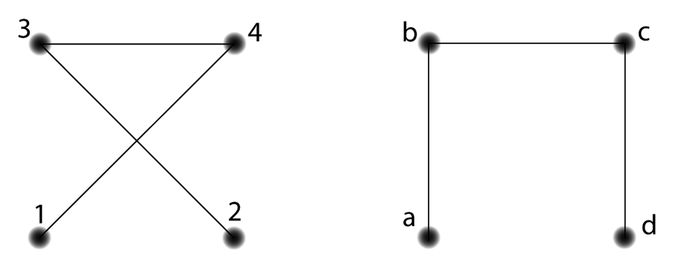
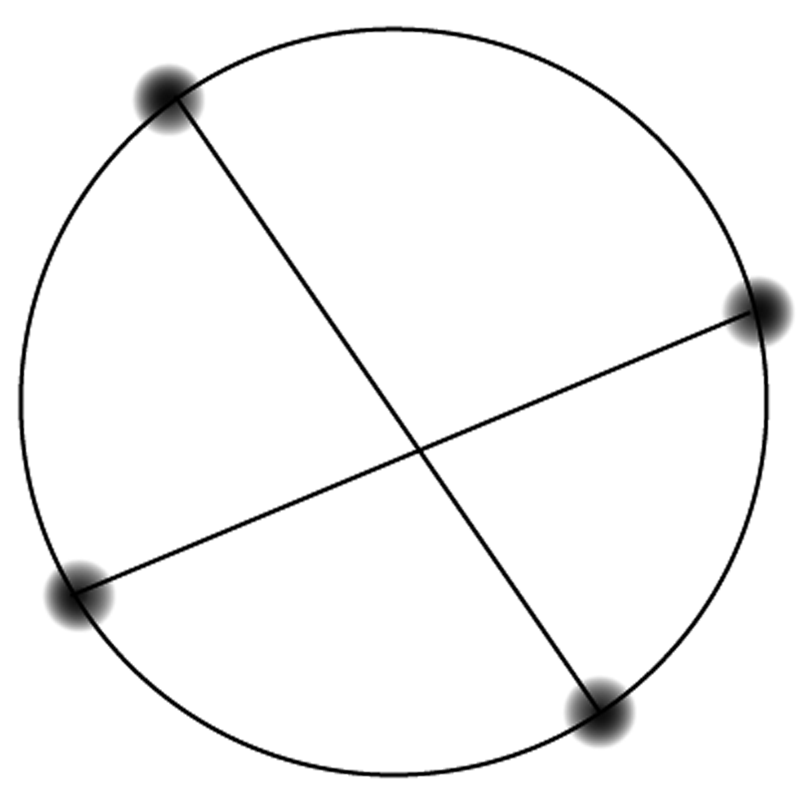
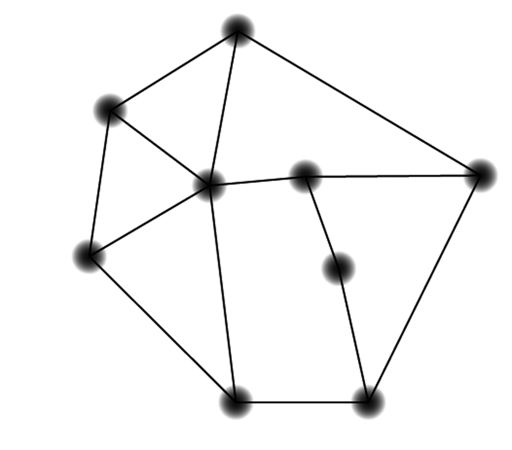
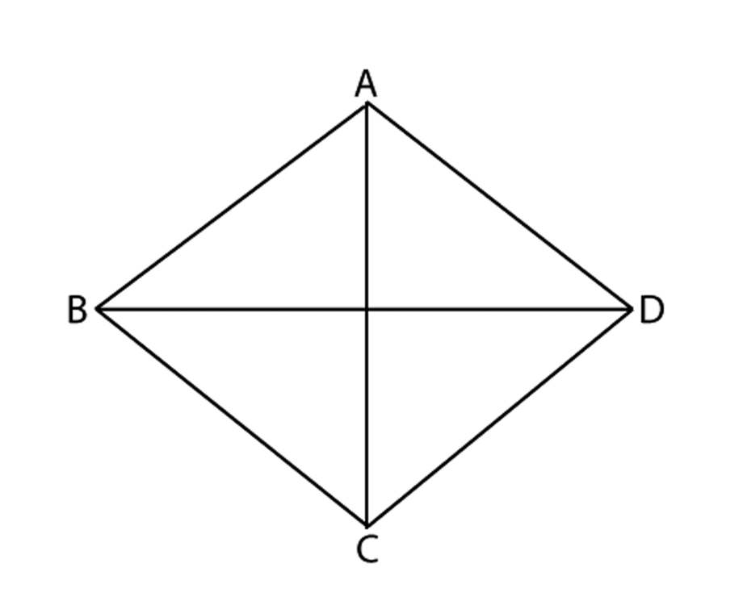
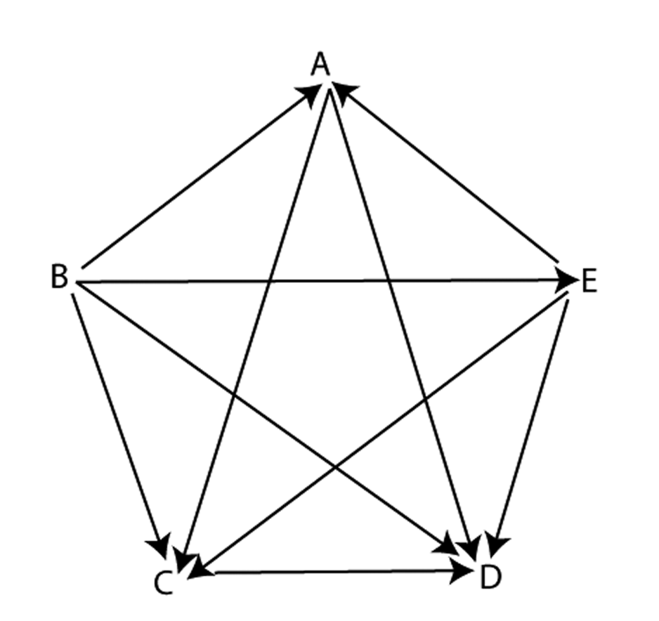
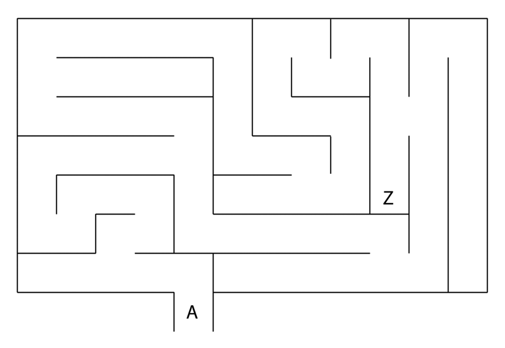

look for patternstinkerdescribevisualizerepresent symbolicallyprovecheck for plausibilitytake things apartconjecturechange or simplify the problemwork backwardsre-examine the problemchange representationscreate
look for patternstinkerdescribevisualizerepresent symbolicallyprovecheck for plausibilitytake things apartconjecturechange or simplify the problemwork backwardsre-examine the problemchange representationscreate
look for patternstinkerdescribevisualizerepresent symbolicallyprovecheck for plausibilitytake things apartconjecturechange or simplify the problemwork backwardsre-examine the problemchange representationscreate
look for patternstinkerdescribevisualizerepresent symbolicallyprovecheck for plausibilitytake things apartconjecturechange or simplify the problemwork backwardsre-examine the problemchange representationscreate
look for patternstinkerdescribevisualizerepresent symbolicallyprovecheck for plausibilitytake things apartconjecturechange or simplify the problemwork backwardsre-examine the problemchange representationscreate
look for patternstinkerdescribevisualizerepresent symbolicallyprovecheck for plausibilitytake things apartconjecturechange or simplify the problemwork backwardsre-examine the problemchange representationscreate
look for patternstinkerdescribevisualizerepresent symbolicallyprovecheck for plausibilitytake things apartconjecturechange or simplify the problemwork backwardsre-examine the problemchange representationscreate
look for patternstinkerdescribevisualizerepresent symbolicallyprovecheck for plausibilitytake things apartconjecturechange or simplify the problemwork backwardsre-examine the problemchange representationscreate
look for patternstinkerdescribevisualizerepresent symbolicallyprovecheck for plausibilitytake things apartconjecturechange or simplify the problemwork backwardsre-examine the problemchange representationscreate
look for patternstinkerdescribevisualizerepresent symbolicallyprovecheck for plausibilitytake things apartconjecturechange or simplify the problemwork backwardsre-examine the problemchange representationscreate
look for patternstinkerdescribevisualizerepresent symbolicallyprovecheck for plausibilitytake things apartconjecturechange or simplify the problemwork backwardsre-examine the problemchange representationscreate
look for patternstinkerdescribevisualizerepresent symbolicallyprovecheck for plausibilitytake things apartconjecturechange or simplify the problemwork backwardsre-examine the problemchange representationscreate
look for patternstinkerdescribevisualizerepresent symbolicallyprovecheck for plausibilitytake things apartconjecturechange or simplify the problemwork backwardsre-examine the problemchange representationscreate
look for patternstinkerdescribevisualizerepresent symbolicallyprovecheck for plausibilitytake things apartconjecturechange or simplify the problemwork backwardsre-examine the problemchange representationscreate
look for patternstinkerdescribevisualizerepresent symbolicallyprovecheck for plausibilitytake things apartconjecturechange or simplify the problemwork backwardsre-examine the problemchange representationscreate
look for patternstinkerdescribevisualizerepresent symbolicallyprovecheck for plausibilitytake things apartconjecturechange or simplify the problemwork backwardsre-examine the problemchange representationscreate
look for patternstinkerdescribevisualizerepresent symbolicallyprovecheck for plausibilitytake things apartconjecturechange or simplify the problemwork backwardsre-examine the problemchange representationscreate
look for patternstinkerdescribevisualizerepresent symbolicallyprovecheck for plausibilitytake things apartconjecturechange or simplify the problemwork backwardsre-examine the problemchange representationscreate
look for patternstinkerdescribevisualizerepresent symbolicallyprovecheck for plausibilitytake things apartconjecturechange or simplify the problemwork backwardsre-examine the problemchange representationscreate
look for patternstinkerdescribevisualizerepresent symbolicallyprovecheck for plausibilitytake things apartconjecturechange or simplify the problemwork backwardsre-examine the problemchange representationscreate
Habits
look for patternstinkerdescribevisualizerepresent symbolicallyprovecheck for plausibilitytake things apartconjecturechange or simplify the problemwork backwardsre-examine the problemchange representationscreate
look for patternstinkerdescribevisualizerepresent symbolicallyprovecheck for plausibilitytake things apartconjecturechange or simplify the problemwork backwardsre-examine the problemchange representationscreate
look for patternstinkerdescribevisualizerepresent symbolicallyprovecheck for plausibilitytake things apartconjecturechange or simplify the problemwork backwardsre-examine the problemchange representationscreate
look for patternstinkerdescribevisualizerepresent symbolicallyprovecheck for plausibilitytake things apartconjecturechange or simplify the problemwork backwardsre-examine the problemchange representationscreate
look for patternstinkerdescribevisualizerepresent symbolicallyprovecheck for plausibilitytake things apartconjecturechange or simplify the problemwork backwardsre-examine the problemchange representationscreate
look for patternstinkerdescribevisualizerepresent symbolicallyprovecheck for plausibilitytake things apartconjecturechange or simplify the problemwork backwardsre-examine the problemchange representationscreate
look for patternstinkerdescribevisualizerepresent symbolicallyprovecheck for plausibilitytake things apartconjecturechange or simplify the problemwork backwardsre-examine the problemchange representationscreate
look for patternstinkerdescribevisualizerepresent symbolicallyprovecheck for plausibilitytake things apartconjecturechange or simplify the problemwork backwardsre-examine the problemchange representationscreate
look for patternstinkerdescribevisualizerepresent symbolicallyprovecheck for plausibilitytake things apartconjecturechange or simplify the problemwork backwardsre-examine the problemchange representationscreate
look for patternstinkerdescribevisualizerepresent symbolicallyprovecheck for plausibilitytake things apartconjecturechange or simplify the problemwork backwardsre-examine the problemchange representationscreate
look for patternstinkerdescribevisualizerepresent symbolicallyprovecheck for plausibilitytake things apartconjecturechange or simplify the problemwork backwardsre-examine the problemchange representationscreate
look for patternstinkerdescribevisualizerepresent symbolicallyprovecheck for plausibilitytake things apartconjecturechange or simplify the problemwork backwardsre-examine the problemchange representationscreate
look for patternstinkerdescribevisualizerepresent symbolicallyprovecheck for plausibilitytake things apartconjecturechange or simplify the problemwork backwardsre-examine the problemchange representationscreate
look for patternstinkerdescribevisualizerepresent symbolicallyprovecheck for plausibilitytake things apartconjecturechange or simplify the problemwork backwardsre-examine the problemchange representationscreate
look for patternstinkerdescribevisualizerepresent symbolicallyprovecheck for plausibilitytake things apartconjecturechange or simplify the problemwork backwardsre-examine the problemchange representationscreate
look for patternstinkerdescribevisualizerepresent symbolicallyprovecheck for plausibilitytake things apartconjecturechange or simplify the problemwork backwardsre-examine the problemchange representationscreate
look for patternstinkerdescribevisualizerepresent symbolicallyprovecheck for plausibilitytake things apartconjecturechange or simplify the problemwork backwardsre-examine the problemchange representationscreate
look for patternstinkerdescribevisualizerepresent symbolicallyprovecheck for plausibilitytake things apartconjecturechange or simplify the problemwork backwardsre-examine the problemchange representationscreate
look for patternstinkerdescribevisualizerepresent symbolicallyprovecheck for plausibilitytake things apartconjecturechange or simplify the problemwork backwardsre-examine the problemchange representationscreate
look for patternstinkerdescribevisualizerepresent symbolicallyprovecheck for plausibilitytake things apartconjecturechange or simplify the problemwork backwardsre-examine the problemchange representationscreate
of Mind
look for patterns
to look for patterns amongst a set of numbers or figures
tinker
to play around with numbers, figures, or other mathematical expressions in order to learn something more about them or the situation; experiment
describe
to describe clearly a problem, a process, a series of steps to a solution; modulate the language (its complexity or formalness) depending on the audience
visualize
to draw, or represent in some fashion, a diagram in order to help understand a problem; to interpret or vary a given diagram
represent symbolically
to use algebra to solve problems efficiently and to have more confidence in one’s answer, and also so as to communicate solutions more persuasively, to acquire deeper understanding of problems, and to investigate the possibility of multiple solutions
prove
to desire that a statement be proved to you or by you; to engage in dialogue aimed at clarifying an argument; to establish a deductive proof; to use indirect reasoning or a counterexample as a way of constructing an argument
check for plausibility
to routinely check the reasonableness of any statement in a problem or its proposed solution, regardless of whether it seems true or false on initial impression; to be particularly skeptical of results that seem contradictory or implausible, whether the source be peer, teacher, evening news, book, newspaper, internet or some other; and to look at special and limiting cases to see if a formula or an argument makes sense in some easily examined specific situations
take things apart
to break a large or complex problem into smaller chunks or cases, achieve some understanding of these parts or cases, and rebuild the original problem; to focus on one part of a problem (or definition or concept) in order to understand the larger problem
conjecture
to generalize from specific examples; to extend or combine ideas in order to form new ones
change or simplify the problem
to change some variables or unknowns to numbers; to change the value of a constant to make the problem easier; change one of the conditions of the problem; to reduce or increase the number of conditions; to specialize the problem; make the problem more general
work backwards
to reverse a process as a way of trying to understand it or as a way of learning something new; to work a problem backwards as a way of solving
re-examine the problem
to look at a problem slowly and carefully, closely examining it and thinking about the meaning and implications of each term, phrase, number and piece of information given before trying to answer the question posed
change representations
to look at a problem from a different perspective by representing it using mathematical concepts that are not directly suggested by the problem; to invent an equivalent problem, about a seemingly different situation, to which the present problem can be reduced; to use a different field (mathematics or other) from the present problem’s field in order to learn more about its structure
create
to invent mathematics both for utilitarian purposes (such as in constructing an algorithm) and for fun (such as in a mathematical game); to posit a series of premises (axioms) and see what can be logically derived from them
look for patternstinkerdescribevisualizerepresent symbolicallyprovecheck for plausibilitytake things apartconjecturechange or simplify the problemwork backwardsre-examine the problemchange representationscreate
look for patternstinkerdescribevisualizerepresent symbolicallyprovecheck for plausibilitytake things apartconjecturechange or simplify the problemwork backwardsre-examine the problemchange representationscreate
look for patternstinkerdescribevisualizerepresent symbolicallyprovecheck for plausibilitytake things apartconjecturechange or simplify the problemwork backwardsre-examine the problemchange representationscreate
look for patternstinkerdescribevisualizerepresent symbolicallyprovecheck for plausibilitytake things apartconjecturechange or simplify the problemwork backwardsre-examine the problemchange representationscreate
look for patternstinkerdescribevisualizerepresent symbolicallyprovecheck for plausibilitytake things apartconjecturechange or simplify the problemwork backwardsre-examine the problemchange representationscreate
look for patternstinkerdescribevisualizerepresent symbolicallyprovecheck for plausibilitytake things apartconjecturechange or simplify the problemwork backwardsre-examine the problemchange representationscreate
look for patternstinkerdescribevisualizerepresent symbolicallyprovecheck for plausibilitytake things apartconjecturechange or simplify the problemwork backwardsre-examine the problemchange representationscreate
look for patternstinkerdescribevisualizerepresent symbolicallyprovecheck for plausibilitytake things apartconjecturechange or simplify the problemwork backwardsre-examine the problemchange representationscreate
look for patternstinkerdescribevisualizerepresent symbolicallyprovecheck for plausibilitytake things apartconjecturechange or simplify the problemwork backwardsre-examine the problemchange representationscreate
look for patternstinkerdescribevisualizerepresent symbolicallyprovecheck for plausibilitytake things apartconjecturechange or simplify the problemwork backwardsre-examine the problemchange representationscreate
look for patternstinkerdescribevisualizerepresent symbolicallyprovecheck for plausibilitytake things apartconjecturechange or simplify the problemwork backwardsre-examine the problemchange representationscreate
look for patternstinkerdescribevisualizerepresent symbolicallyprovecheck for plausibilitytake things apartconjecturechange or simplify the problemwork backwardsre-examine the problemchange representationscreate
look for patternstinkerdescribevisualizerepresent symbolicallyprovecheck for plausibilitytake things apartconjecturechange or simplify the problemwork backwardsre-examine the problemchange representationscreate
look for patternstinkerdescribevisualizerepresent symbolicallyprovecheck for plausibilitytake things apartconjecturechange or simplify the problemwork backwardsre-examine the problemchange representationscreate
look for patternstinkerdescribevisualizerepresent symbolicallyprovecheck for plausibilitytake things apartconjecturechange or simplify the problemwork backwardsre-examine the problemchange representationscreate
look for patternstinkerdescribevisualizerepresent symbolicallyprovecheck for plausibilitytake things apartconjecturechange or simplify the problemwork backwardsre-examine the problemchange representationscreate
look for patternstinkerdescribevisualizerepresent symbolicallyprovecheck for plausibilitytake things apartconjecturechange or simplify the problemwork backwardsre-examine the problemchange representationscreate
look for patternstinkerdescribevisualizerepresent symbolicallyprovecheck for plausibilitytake things apartconjecturechange or simplify the problemwork backwardsre-examine the problemchange representationscreate
look for patternstinkerdescribevisualizerepresent symbolicallyprovecheck for plausibilitytake things apartconjecturechange or simplify the problemwork backwardsre-examine the problemchange representationscreate
look for patternstinkerdescribevisualizerepresent symbolicallyprovecheck for plausibilitytake things apartconjecturechange or simplify the problemwork backwardsre-examine the problemchange representationscreate
Habits
look for patternstinkerdescribevisualizerepresent symbolicallyprovecheck for plausibilitytake things apartconjecturechange or simplify the problemwork backwardsre-examine the problemchange representationscreate
look for patternstinkerdescribevisualizerepresent symbolicallyprovecheck for plausibilitytake things apartconjecturechange or simplify the problemwork backwardsre-examine the problemchange representationscreate
look for patternstinkerdescribevisualizerepresent symbolicallyprovecheck for plausibilitytake things apartconjecturechange or simplify the problemwork backwardsre-examine the problemchange representationscreate
look for patternstinkerdescribevisualizerepresent symbolicallyprovecheck for plausibilitytake things apartconjecturechange or simplify the problemwork backwardsre-examine the problemchange representationscreate
look for patternstinkerdescribevisualizerepresent symbolicallyprovecheck for plausibilitytake things apartconjecturechange or simplify the problemwork backwardsre-examine the problemchange representationscreate
look for patternstinkerdescribevisualizerepresent symbolicallyprovecheck for plausibilitytake things apartconjecturechange or simplify the problemwork backwardsre-examine the problemchange representationscreate
look for patternstinkerdescribevisualizerepresent symbolicallyprovecheck for plausibilitytake things apartconjecturechange or simplify the problemwork backwardsre-examine the problemchange representationscreate
look for patternstinkerdescribevisualizerepresent symbolicallyprovecheck for plausibilitytake things apartconjecturechange or simplify the problemwork backwardsre-examine the problemchange representationscreate
look for patternstinkerdescribevisualizerepresent symbolicallyprovecheck for plausibilitytake things apartconjecturechange or simplify the problemwork backwardsre-examine the problemchange representationscreate
look for patternstinkerdescribevisualizerepresent symbolicallyprovecheck for plausibilitytake things apartconjecturechange or simplify the problemwork backwardsre-examine the problemchange representationscreate
look for patternstinkerdescribevisualizerepresent symbolicallyprovecheck for plausibilitytake things apartconjecturechange or simplify the problemwork backwardsre-examine the problemchange representationscreate
look for patternstinkerdescribevisualizerepresent symbolicallyprovecheck for plausibilitytake things apartconjecturechange or simplify the problemwork backwardsre-examine the problemchange representationscreate
look for patternstinkerdescribevisualizerepresent symbolicallyprovecheck for plausibilitytake things apartconjecturechange or simplify the problemwork backwardsre-examine the problemchange representationscreate
look for patternstinkerdescribevisualizerepresent symbolicallyprovecheck for plausibilitytake things apartconjecturechange or simplify the problemwork backwardsre-examine the problemchange representationscreate
look for patternstinkerdescribevisualizerepresent symbolicallyprovecheck for plausibilitytake things apartconjecturechange or simplify the problemwork backwardsre-examine the problemchange representationscreate
look for patternstinkerdescribevisualizerepresent symbolicallyprovecheck for plausibilitytake things apartconjecturechange or simplify the problemwork backwardsre-examine the problemchange representationscreate
look for patternstinkerdescribevisualizerepresent symbolicallyprovecheck for plausibilitytake things apartconjecturechange or simplify the problemwork backwardsre-examine the problemchange representationscreate
look for patternstinkerdescribevisualizerepresent symbolicallyprovecheck for plausibilitytake things apartconjecturechange or simplify the problemwork backwardsre-examine the problemchange representationscreate
look for patternstinkerdescribevisualizerepresent symbolicallyprovecheck for plausibilitytake things apartconjecturechange or simplify the problemwork backwardsre-examine the problemchange representationscreate
look for patternstinkerdescribevisualizerepresent symbolicallyprovecheck for plausibilitytake things apartconjecturechange or simplify the problemwork backwardsre-examine the problemchange representationscreate
of Mind
take things apart
Looking at a large or complex problem can be fairly
intimidating — where does one begin? It can seem that there
is too much to take in all at once. Indeed, trying to
understand the “whole” is often completely unhelpful at
first, and we are better off just getting a handle on
individual “parts” that make up the “whole”. To Take Things
Apart is to break a problem down into smaller, more
manageable “chunks” that we can understand. After we have
solved the smaller problems, then we can use our results to
rebuild the original problem and solve it.
You put a rubber band around a 3x5 “grid” of
circles.
Each circle has radius 1.
What is the length of the rubber
band?
What percent of the area inside the
rubber band is not
contained in any circle?
We don’t have a name for the shape we’re trying to find the
perimeter of in part a — it looks like a rectangle, but it
has rounded corners. But we can still find the perimeter by
breaking the shape up into pieces. For instance, we can start
by finding the lengths of the parts of the sides that are
straight — how long are they? It may help to draw some lines
to section off this part of the shape for which you already
have the perimeter. Now look at the part of the shape that’s
left. Can you figure out how to get the remaining
perimeter?
Now all that remains is to break the problem down into
steps in order to figure out what to do. First let’s think
about how to find a percentage of area. That’s going to be
$\frac{{{\rm{The\: area\: inside\: the\: rubber\: band\: but\: not\: in\: the\:
circles}}}}{{{\rm{The\: area\: inside\: the\: rubber\: band}}}}$. This
fraction
tells us that we need to break this problem into two parts:
find the numerator and find the denominator. To get the
denominator, we might be able to use a “take things apart”
process similar to our method in part a. To get the
numerator, you will also need to come up with a plan.
How many triangles are there whose three vertices are
points on
this 3 by 3 square grid? (Math Counts)
If you tackle this problem simply by drawing different
triangles within the diagram, you might find yourself getting
lost. In fact, all the overlapping triangles might lead you
to think that you’ve found all of the triangles (when you
probably haven’t), or you might just give up in the confusion
of lines. So, one suggestion is to systematically take the
diagram apart. First, look at the top-left square of points.
How many triangles are there in this square? Now, how many of
these squares exist in the 3 by 3 grid? So, how many
triangles are there in the 3 by 3 grid that are of the form
that fit into the top-left square?
Now let’s look for more triangles. Instead of using
a square, expand your boundary shape to a 2x3
rectangle. Draw all the possible triangles that fit within
the rectangle, excluding the ones you’ve already counted as
part of a square. Now you can again multiply your answer by
the number of rectangles that occur in the grid. Should you
count overlapping rectangles or not?
Now, complete the problem by counting the rest
of the triangles. While this problem takes some effort at
solving, it certainly takes less effort if you take the
diagram apart and build up the count in
a step-by-step fashion. What’s more, counting
systematically will increase your confidence that you’ve in
fact found every triangle.
On the next page are some more “Take Things Apart” problems for you
to enjoy.
A certain white six-sided die is 1 inch by 1 inch by 1
inch. Each black dot on the die is a circle with radius
$.1$ inch. What’s the area of the white space on the entire
die? (Remember that the area of a circle
is $\pi {r^2}$.)
You put a coin on the top left square of a 3 by 3
checkerboard. You are allowed to make moves that go either
one square to the right, or one square down. How many
different ways can you get the piece to the bottom
right?
What if you are allowed to make moves either right, down,
or diagonally down-right?
The diameter of the earth is about 7920 miles. Imagine
that you stretch a string around the equator of the earth.
If you add one foot to the string, then make the string
hover around the earth like a ring around Saturn, what will
be the distance between the string and the surface of the
earth?
How many different three-letter “words” can be formed
using the letters of the word “DEDUCT”?
How many different triangles are there in the figure
below?
9 identical gears are arranged in a circle. One of the
gears (call it “Gear 1”) is
rotated clockwise. Which way will Gear
5 turn?
In the picture below, the big sphere is filled with air,
and the two little spheres (which stack up to fit exactly
inside the big sphere) are filled with water.
The radius of the big
sphere is 12 inches. How much water is in the whole thing?
How much air?
The average of 10 numbers is 53. The
average of 6 of these numbers is 57. What is the average of
the other 4?
(Copyright mathleague.com.)
The area of the “curved star” in the center of the
diagram is $16 - 4\pi $. What is the area of the large
square?
According to a story on NPR’s Marketplace, Starbucks
sells about 1.9 billion cups of coffee a year. By
manufacturing cups
with 10% recycled materials, Starbucks’s supplier (the
Mississippi River Corporation)
is able to save 11,000 tons of wood per year. How much wood
must it take to make one non-recycled coffee cup?
The base of a
rectangular tank is three feet by two feet, and the tank is
three feet tall. The water in the tank is currently just
nine inches deep.
The water level will rise when
a
one-foot metal cube (denser than water) is placed on the
bottom of the tank. By how much?
The water level will rise some
more when a second one-foot metal cube is placed on the
bottom of the tank, next to the first one. By how much?
(Copyright Phillips Exeter Academy.)
The Physicist Enrico Fermi was famous for asking
students to estimate the
answers to questions that, at first glance, seemed to be
far too complicated to
even approach. For example, to solve
How many pounds of trash do U.S.
households throw out every year?
You might start with a quantity that is easier for you to
reasonably estimate: the weight of the trash that your
family throws out in a given week. (If it is your job to
take the garbage out, you may be especially well-qualified
to answer this question.) From there, you could reason from
other well-known facts and reasonable guesses to scale up
your answer to cover all U.S. households.
These next few problems can similarly be solved by breaking
the problem down into pieces and coming up with your best
estimate (which is not the same as just guessing).
How many blades of grass are
there on the Park soccer field?
How many cows are killed each day
so that McDonald’s restaurants in the United States can
serve up hamburgers?
If the Gym was filled to the brim
with pennies, how much would it be worth?
A needle is what fraction of the
size of a typical haystack?
How many piano tuners are there
in the city of Chicago? (This was Fermi’s favorite
problem.)
The line segment is tangent to the inner circle and is
100 m long in each diagram. Which ring has the larger area
(i.e., area between the circles)?
In the right triangle below, what is the product of the
slopes of the 3 sides?
(Assume that angle C is a right angle,
and that AC is not horizontal)
Without looking up any formulas, find the surface area
of a cylindrical can that has a diameter of 12 cm and a
height of 12 cm.
A primitive earlier form of a pyramid was a ziggurat. A
simple version could be constructed by making a square base
consisting of, say, 9 cubes on a side. The next layer up is
a square 7 cubes on a side, piled directly on top of the
base and with the same center. This continues all the way
up to the top single cube.
How many blocks in this ziggurat
are hidden from view?
If the edge of each cube is 1ft
long, what is the total edge length showing (2 overlapping
edges only count as 1 edge)?
What would your answers to Parts
a and b be if the base of the ziggurat
was 99 cubes on a side?
Lesson 1:
Graph Theory
Introduction: Three Challenges
Felix will fly into Birmingham tomorrow to visit some family
members. Today, he has his Alabama map spread out over a table
in the local coffee shop to determine the route he will drive with his
pay-per-mile rental car. He has a cousin in Birmingham, grandparents in
Huntsville, an aunt in Cottondale, and a brother in Tuscaloosa. When Felix
realized that he’ll soon be served some of his grandma’s chicken
liver-sardine-cranberry casserole, he gagged on his cappuccino and
accidentally spilled the whole cup on his map. The only usable part of the
map remaining is the mileage chart between cities. Here is the mileage
between the relevant cities:
Birmingham
Huntsville
Cottondale
Tuscaloosa
Birmingham
X
102
50
56
Huntsville
102
X
148
143
Cottondale
50
148
X
9
Tuscaloosa
56
143
9
X
In what order should Felix visit his relatives to minimize
the number of miles he drives with the rental car? Remember
that he has to return to Birmingham to return the rental
car.
Below is a map of part of the Middle East. You have different
colors you can use to color in the different countries. If two
countries are touching, then you should make them different
colors so someone can easily tell they’re different
countries.
(For your reference and edification, the numbered countries
are 4-Jordan, 5-Lebanon, 6-Syria, 7-Turkey, 8a-Georgia,
8b-Russia, 9-Armenia, 10-Azerbaijan, 12-Iraq, 13-Kuwait)
(image from
http://catholic-resources.org/Courses/SCTR19-Spring2007-Worksheets.htm)
Color the map using as few colors as possible.
(If you don’t have markers, just write the name of
the color or use shading.)
Kim is figuring out the schedule for next year. It’s tough,
because out of
thirteen electives, several students have expressed interest in
taking more than one of them. She doesn’t want to schedule two
classes in the same block if
there are students who want to take both of those classes.
In the grid below, an “x” indicates that at least one
student has expressed an interest in taking both classes in
that row and column of the grid.
Poetry
Adv calc
Crim law
Foren.
Pract.
Stat
Prod.
Animal behavior
Civ. Lib.
Java
Shakespeare
Astro
Discrete
Poetry
x
x
x
Adv Calc
x
x
Crim Law
x
x
x
x
Forensics
x
x
x
x
x
Practicum
x
x
x
x
x
x
Stat
x
x
x
Production
x
x
Animal
x
x
x
x
Civ Lib
x
x
x
x
Java
x
x
x
x
Shakespeare
x
x
x
x
x
Astro
x
x
x
x
Discrete
x
x
Assign each class a block (A through F) so that you
never put two classes in the same block if there’s
anyone who wants to take both classes.
Now, suppose that all
of these electives are to be
scheduled on an ABC day. Can Kim create a successful,
conflict-free schedule with only three blocks? If not, what is
the fewest number of blocks that would
accommodate these electives?
Development
To determine Felix’s driving route, you probably recognized
a way to represent the situation visually — whether you
sketched out a map or drew a diagram.
The second and third problems, however, didn’t have an
obvious new representation
to apply. Some people probably applied labels; others may have
made lists. It turns out, though, if we use the method of the
first problem with the second and third, we can learn much more
from the data!
Most likely, the diagram you used in the first problem was
actually a graph. A graph, in its most general sense, is a
collection of dots (called “nodes”) and lines connecting them
(called “edges”). In your graph of Felix’s problem, the nodes
represented cities, and the edges related the nodes by showing
the distances between.
We can represent the second situation with a graph, too, if
we let each country be represented by a node. We can draw an
edge between nodes when those countries border each other. Our
graph comes out to look like this:
The problem now becomes to color each dot in such a way that
any two dots connected by lines are always different
colors.
What is the minimum number of colors you need now?
Did you think this version of the “coloring” problem was
easier than in the introduction? Why or why not?
Similarly, we can represent the scheduling problem as a
graph. The nodes can represent classes, and an edge can connect
the nodes in the cases where some student wants to take both
classes, as in the figure below.
Solve the scheduling problem using this representation.
What minimum number of blocks can you identify now?
Was this version of the schedule problem easier than in
the introduction? Why or why not?
The tools you have been using so far in this lesson are the
tools of graph theory.
Already, graph theory has been über-useful in helping us
represent relationships in a very streamlined way. What’s more,
we can now see that the map-coloring problem and the scheduling
problem — initially very different — are actually remarkably
similar.
In fact, the identically structured graphs of the
map-coloring problem and the scheduling problem are isomorphic.
Two graphs are isomorphic when each node in one graph has a
“partner” node in the other — a “partner” with the same
connections. For example, Georgia in the first graph and
Astronomy in the second correspond to one another. So do
Lebanon and Advanced Calc. This correspondence comes from their
identically structured connections, not their actual position
on the page.
The following two graphs are not isomorphic.
An easy way to see that the graphs are not isomorphic is to
see that node B has no “partner.” In the left hand graph, B has
three edges coming out of it. On the right, no node has three
edges coming out of it, so B has no possible “partner.” The
number of edges connected to a node is a very important
characteristic. The degree of a node (abbreviated deg(n)) is
the number of edges coming out of it. So in the left-hand graph
deg(A) = 1 and deg(B) = 3. What is deg(C)?
Isomorphisms can be trickier to spot than we’ve seen so far.
For example, someone else with the task of drawing the
scheduling graph might have come up with the following:
Check to see if this graph is still an accurate
representation of the scheduling problem. Explain, in
language a sixth-grader could understand, what you need to do
to check if two graphs are isomorphic.
One final important concept that we will use is planarity.
In the second
version of the schedule graph, some edges crossed at places
other than nodes. (For example, the edge connecting Animal
Behavior to Shakespeare crosses the edge connecting Astro to
Discrete.) In these cases, you can think of the edges passing
under or over each other.
Graphs where you don’t have to do this — where there is a
way you can draw them without crossing the edges — are called
planar.
Why do you think the word “planar” might be used?
Note that a graph might be drawn with the edges crossing,
and yet be isomorphic to a graph that is clearly planar, as in the following
two graphs (with pairing 1-d, 2-a, 3-b, 4-c):

In this case, we still say the first graph is planar because
it can be drawn with no edges crossing and still represent the
same information. Imagine picking up nodes 1 and 2, with their
edges still attached, and “uncrossing” them to get something
with the same shape as the second graph.
Draw a nonplanar graph.
Find some degrees of nodes in the Middle East graph.
What is deg(Saudi Arabia)?
What is deg(Syria)?
What country’s node has the
highest degree?
Practice
A shelter needs to find homes for nine cats. The table
below indicates with an “x” which pairs of cats do not get
along. Assuming that cats who do not get along cannot go with
the same family, what is the minimum number of families
needed to adopt all of these cats?
A
B
C
D
E
F
G
H
I
A
x
B
x
x
x
C
x
x
x
D
x
x
x
x
E
x
x
x
x
F
x
x
x
x
G
x
x
x
x
x
H
x
x
x
x
x
I
x
x
x
Which of these pairs of graphs are isomorphic? For graphs
that are isomorphic, give the pairing of the nodes.
Now is a good time to think about visualizing the edges
stretching and bending to see if you can make the shape on
the left look like the shape on the right.
Which of the next three graphs is an accurate representation
of the borders shared by the states on the map?
What’s the degree of each node in each of these
graphs?
Which of these graphs are planar? For the ones that
are planar, show how you can draw them with no edges
crossing.
a. b. c. d. e. f.
A school has four exam periods. If one student is enrolled
in two different courses, the exams for those courses need to
be scheduled in different periods so that the student may
take both exams. The following chart shows the pairs of
courses having at least one student enrolled in both.
Graphic
Design
Philos-
ophy
Architecture
Russian
History
French
Statistics
Chemistry
20th Century Lit
Graphic Design
x
x
x
x
Philosophy
x
x
x
x
Architecture
x
x
x
Russian History
x
x
x
x
x
French
x
x
Statistics
x
x
x
x
x
Chemistry
x
x
x
20th
Century Lit
x
x
x
x
Represent this situation as a
graph.
Is it possible to create an exam
schedule so that no student has to be in two places at
once?
Find an exam schedule that uses four different exam periods.
Problems
(From Finkbeiner and Lindstrom) The Board of Directors of
XYZ Corporation has 16 members and 6 committees of 5 persons
each as indicated by the following chart.
Committee
Members
1
A, D, G, K, N
2
A, B, G, L, M
3
H, J, L, P, R
4
C, E, F, M, Q
5
C, J, K, N, R
6
D, E, H, P, Q
How many distinct meeting
times are needed to conduct the committee meetings of the
board?
Draw a graph in which the total degree — that is, the sum
of the degrees of each node — is odd.
The graph we used to represent bordering countries in
problem 4 was planar. Create a map of your own countries for
which the corresponding graph is nonplanar.
A graph is complete when every node is connected to every
other node by an edge. Here’s a complete graph with four
nodes:
Draw:
A complete graph with five
nodes.
A complete graph with six
nodes.
A complete graph with three
nodes.
How many edges will a complete graph with each of the
following number of nodes have?
Five nodes
Six nodes
Three nodes
How would you calculate the number of edges of a complete
graph with…
A hundred nodes?
n nodes?
Now that you know how the number
of nodes and edges in a complete graph are related,
investigate this relationship further.
Are the number of nodes and the
number of edges in a complete graph related directly? That
is, if you double the number of nodes, does the number of
edges double, too?
Are the number of nodes and edges
in a complete graph related linearly? Or does the number of
edges go up “faster” or “slower” than in a linear
relationship?
What’s the minimum number of nodes needed for a graph with
1000 edges, if at most one edge can connect two nodes, and no
edge can connect a node to itself?
If a complete graph has 500 nodes, can you estimate the
number of edges quickly? Is it more likely to be roughly
12500, 125000, or 1250000 edges?
In the complete graph with four nodes, pictured earlier,
the graph is drawn so that some of the edges crossed.
However,
just because it is drawn that way in that particular diagram
does not mean the graph is not planar.
Is the complete graph with four
nodes planar?
Is the complete graph with five
nodes planar?
How about complete graphs with more
than five nodes?
The symbol “Deg,” as in the degree of a node, represents a
function. What kinds of objects does Deg take as input? What
kinds of objects does it output? By the way, the set of
allowable inputs to a function is called its domain, and the
set of allowable outputs is called its range.
For the next seven problems, it will be useful to change the
representation of the problem using the tools of graph theory.
The first question to
ask yourself is always, “what should the nodes
represent, and what should the edges represent?”
In this “Clue” game board, draw a graph in which you show
which rooms can be reached from the others by the roll of a 6
on a die. Include the secret passages that you can take no
matter what you roll from the Lounge to the Conservatory and
from the Kitchen to the Study. If you roll a number higher
than the number of spaces you need, you can still go in the
room. By the way, is the Clue graph planar?
A group of six sophomores is going down to the Lower
School to read to a group of six first-graders. The teachers
asked for a list of preferences, both from the first-graders
and the sophomores, as to who would read to whom.
(First grader)
(would like to be read to by)
Algernon
Xenophon, Yvonne, Ulysses
Bartleby
Ulysses, Vlad, Yvonne, Zaphod
Curio
Vlad, Winnifred, Zaphod
Duncan
Winnifred, Zaphod, Xenophon
Evangeline
Ulysses, Xenophon
Francine
Ulysses ,Vlad, Winnifred, Zaphod
(Sophmore)
(would like to read to)
Ulysses
Algernon, Bartleby, Evangeline, Francine
Vlad
Bartleby, Curio, Francine
Winnifred
Bartleby, Curio, Duncan, Evangeline, Francine
Xenophon
Algernon, Evangeline
Yvonne
Algernon, Duncan, Francine
Zaphod
Bartleby, Curio, Francine
Is there a way to form partners that will make everybody
happy?
(From Epp) A traveler in Europe wants to visit each of six
cities shown on this map exactly once, starting and ending in
Brussels.
The distance (in kilometers) between each pair of cities is
given in the table. Suggest
a sequence of cities she can visit that
minimizes the distance traveled.
Berlin
Brussels
Dusseldorf
Luxembourg
Munich
Brussels
783
--
Dusseldorf
564
223
--
Luxembourg
764
219
224
--
Munich
585
771
613
517
--
Paris
1057
308
497
375
832
Wiki-Racing! The game of wiki-racing involves starting on
a randomly generated
Wikipedia page and taking Wikipedia links to navigate through
until you reach a designated ending page. For example, two
players on two different computers might agree to end on the
page for “Fruit Bat.” The first player to arrive at the Fruit
Bat Wikipedia page using only the links on Wikipedia pages
would win.
Below is a list of webpages in our miniature
version of wiki-racing. Each webpage links to some, but not
necessarily all, of the others.
Wikipedia Page
Links on that page
Toy Story
Walt Disney Pictures
Pixar Animation Studios
Toy Story 3
Buzz Lightyear
Toy Story
Pixar Animation Studios
Meet the Robinsons
Buzz Lightyear
Pixar Animation Studios
Walt Disney Pictures
Toy Story
Meet the Robinsons
Walt Disney Pictures
Toy Story 3
Walt Disney Pictures
Pixar Animation Studios
How could you represent this
situation using a graph?
What is the fewest number of clicks
it will take to go from the Toy Story page to the Toy Story 3
page? From the Toy Story page to the Buzz Lightyear page?
Oh, no — your parents just announced that they’re dropping
by your apartment for a surprise visit. But your place is a
mess. Fortunately, you’ve got some elves — as many as you
need — to help you clean the place, but even an elf can’t
wash lights with darks. Here’s what you and the elves have
got to do, and the time it takes to do each thing:
Wash your load of light-colored laundry
(30 mins)
Wash your load of dark-colored laundry
(30 mins, and remember you’ve only got
one washer)
Dry
your lights (45 mins, and you have to
wash the lights first)
Dry
your darks (45 mins, you have to wash
the darks first, and you’ve only got one dryer)
Scrape off the dishes in your sink (10 mins)
Load and run the dishwasher
(60 mins, and you have to scrape first)
Pick your stuff up off of the floor
(20 minutes)
Vacuum (10 minutes, and you have to pick
up your stuff first)
Find a good graph-theory way to
represent this problem. How long will it take you to put your
apartment in order?
What is the minimum number of elves
you need to do everything in that amount of time?
You have a ${3 \times 3 }$ chessboard. The black knights
are in the top two corners, and the white knights are in the
bottom two corners. No other pieces are on the board. (Recall
that the only moves knights are allowed to make is “2 up or
down, 1 left or right,” or “1 up or down, 2 left or right,”
but that they can “jump” pieces.)
How many moves will it take to
switch the position of the knights, so that the black knights
are now in the bottom two corners and the white knights are
in the top two corners?
How many moves will it take just to
switch the two rightmost knights?
Below is a map of the town of Königsberg,
Prussia, as it existed in the 18th Century.
A popular puzzle at the time was to cross all seven bridges
without ever going
back over a bridge you’ve crossed, and wind up at your
starting point. Solve the puzzle yourself. (The mathematician
Leonhard Euler invented graph theory by analyzing this
problem.)
For each figure, say whether you can trace it with your
pencil without going over any segment twice, ending at your
starting point.
A graph that can be traced in the manner of the previous
problem is said to have
an Euler Circuit, named after the
mathematician who invented graph theory. Propose a method for
determining if a given graph has an Euler circuit or not.
(Are any of the concepts you’ve learned in this lesson
relevant?) Make up new examples to test, if necessary.
Which complete graphs have Euler
circuits?
The Irish mathematician William Rowan Hamilton invented a
game in the 1850s called the Icosian Game. In it, you had to
visit a list of cities connected by roads, as represented by
the graph below.
The challenge was to start
in one city and follow the roads to visit all the cities,
winding up at your starting city without ever having visited a
city twice. Solve the Icosian Game.
If you read the previous problem carefully, you won’t be
surprised to learn that
a circuit of the type you found — one where you need to visit
each node exactly once and return to your starting node —
is called a Hamiltonian circuit. Find
Hamiltonian circuits for each graph below.

Do you suppose that all graphs have
Hamiltonian circuits?
Don’t use a calculator for this problem.
Factor ${x^2} + 8x + 16$
Factor ${x^2} - 16$
Solve for $x$: ${x^2} - 5x + 6 =
0$
Subtract $4 \frac{7}{5} - 2 \frac{1}{3}$
If $x^2+y^2=30$ and
${(x + y)^2} = 484$ , what is $xy$ ?
The diagram below shows a blueprint of three different
utility companies and three houses. You want to add to the
blueprint lines running from each utility company to each
house, but the lines cannot cross one another. Suggest a way
to do this or argue that it is impossible.
You
may not have needed a graph to fully analyze the previous
problem — but clearly, you could have drawn a graph to
represent the situation. Graphs like the one in problem 43 that
have two different groupings of nodes are called bipartite. In
a bipartite graph, edges may only be drawn between nodes in two
different groups (like house and utility); they never connect
nodes in the same group. When you solved Problem 30, you also
would have used a bipartite graph; however that graph was not a
complete bipartite graph, whereas the graph in 43 is complete
bipartite. Do you see why?
Draw a complete bipartite graph between two groups of two
nodes. This graph is abbreviated $K_{2,2}$. Now draw $K_{2,4}$. Using
this notation, what graph were you
working with in Problem 43?
How many colors are needed to color
the graph $K_{2,4}$? How about $K_{m,n}$?
Find a formula for the total degree
of $K_{m,n}$.
In the three-utilities puzzle (see problem 43), suppose
now that lines are allowed to cross, and so the lines are
actually run that way. If you accidentally cut one of the
pipes without knowing which one it is, what’s the probability
that the gas in the leftmost house will go out? How about if
there are $m$ houses and $n$ utilities, instead?
Any graph that could represent “who beat whom” in a
situation where each team plays every other team once is
called a tournament. Which of the graphs below are
tournaments?


The Game of Sprouts: Mark a few dots on a piece of paper.
A move consists of two actions: connect two different dots
with a single edge then place a dot at around the middle of
this edge. You can only connect two dots if each has a degree
of less than 3, and you may not repeat an edge or cross
edges. The person who has no move is the loser.
If you start with only two dots,
then what is the maximum number of moves the game can last?
At the end of the two-dot sprouts
game, what will be the total degree of the diagram?
At the end of the $n$-dot sprouts
game, what will be the total degree of the diagram?
How many moves will the $n$-dot
sprouts game take?
The following is a floor plan of a house. Is it possible
to enter the house in room A, travel through every interior
doorway of the house exactly once, and exit out of room
E?
Exploring in Depth
Earlier we learned that if two graphs are isomorphic, each node has a "partner" of the same degree. Is it also true that when nodes can be matched into partners having the same degree, the two graphs must be isomorphic?
An Euler Path is a way of tracing a graph so that you trace all the edges but wind up in a different place than where you started. Which of these graphs have Euler paths?
The following diagram represents land connected by
bridges. Can you walk these bridges without retracing your
steps? (Though not necessarily winding up in
the same place you started.)
Propose a criterion by which you’d be able to tell if a
graph has an Euler path. Does it matter which nodes are your
starting and ending points? Remember to examine a similar
problem by making up specific cases for yourself.
In problem 32 and the tournament
problem (see problem 48), you drew a directed graph — a graph
where the edges are one-way. The question of finding Euler
circuits is more complicated on directed graphs. Do some
experiments and propose criteria for whether a directed graph
has an Euler circuit.
Does every tournament have a Hamiltonian path? What does
it mean for the team rankings if there is more than one path
through a tournament?
Come up with your own system to
determine the winner of a tournament. It may help to create
some of your own examples of tournaments.
The following graph represents streets
and corners; the portion of a street
between two corners is a “block”. The neighborhood
association decides to place streetlights at some of the
various corners
so that the neighborhood never gets too dark at night. They
want there to be enough streetlights so that every home is on
a block that has a streetlight on at least one of its
corners. Assume that there are homes between each pair of
adjacent corners. Find the smallest number of street lights
needed.
Use a graph to represent and solve the
following maze.

The “doughnut” shape below is called
a torus. You know you can’t draw a
complete graph with five nodes on a
flat surface. But can you draw it on the surface of a
torus?
If the blueprint for the houses and utilities (see problem
43) were printed on paper shaped like a torus, could you run
the
wiring with no overlaps?
Lesson 2:
Primes Products And Exponents
Development
As you learned last year, factoring a number means
expressing it as the product of two or more other numbers. For
example, 40 can be factored as $2 \cdot 20$. Of course, 40 can
be factored in many other ways as well.
What are all the ways that 40 can be factored into two
whole numbers?
Since 20 can be factored as $4 \cdot 5$, 40 can also be factored into 3
numbers as $2 \cdot 4 \cdot 5$; and since 4 can also be
factored into $2 \cdot 2$, 40 can be factored into 4 numbers as $2 \cdot 2
\cdot 2 \cdot 5$. You might also think of saying it could be
factored into
5 or 6 numbers as $1 \cdot 2 \cdot 2 \cdot 2 \cdot 5$ or $1
\cdot 1 \cdot 2 \cdot 2 \cdot 2 \cdot 5$, but since those
aren’t really
different from $2 \cdot 2 \cdot 2 \cdot 5$, we will agree that
1 won’t “count” as a factor in the following problems, even
though technically 1 is a factor of every number.
Thus, at this point, 40 can’t be “broken down” any more than $2
\cdot 2 \cdot 2 \cdot 5$ (we are restricting ourselves to
positive integers here, so we wouldn’t consider turning 5 into
$2.5 \cdot 2$ or into $- 5 \cdot - 1$).
Find two different ways to factor 72 into two positive
integers. For each of your answers, continue factoring
them until they can’t be “broken down” any more. Finally,
rearrange each of your final factorings so that the factors
are in order from smallest to largest.
Factor 210 into the product of as many positive integers
as possible. Compare your answer with a classmate’s. Based on
this question and on question 2, what generalization might
you now conjecture?
A number has been factored as much as possible when each of
its individual factors cannot be broken down any more. Numbers
greater than 1 that cannot be broken down any more (i.e.,
cannot be factored into smaller positive integers) are called
primes. We say that the prime factorization of 40 is $2 \cdot 2
\cdot 2 \cdot 5$, or ${2^3} \cdot 5$ for short; we know it is
a prime factorization because all of the factors (2, 2, 2, and
5) are primes. As suggested by questions 2 and 3, every
positive integer greater than 1 has a unique prime
factorization. As we will see, this uniqueness means that
rewriting a number in its prime factored form will often be
extremely useful, even though all we have done is written the
same number in a different way.
Sometimes it can be tricky to know what the factors of a
number are: that is, what divides into it evenly, leaving no
remainder. For example, what numbers is 153 divisible by? It
would clearly be helpful if one knew easy procedures (known as
divisibility tests) that allowed one to see if smaller numbers
divided arbitrary larger ones evenly. As a matter of fact, the
divisibility tests for 2 and 5 are easy (what are they?), but
it helps to know the tests for 3 and 11 as well (sadly, there
is no easy test for 7).
If, when you add up the digits of a number, its sum is
divisible by 3, then the number is divisible by 3 as well; on
the other hand, if the sum is not divisible by 3, the number is
not divisible by 3. So 14353 is not divisible by 3 (because $1 + 4 + 3 + 5 + 3 = 16$,
which is not divisible by 3), while 55521 is. We will learn why
the divisibility test for 3 is true later this chapter, but you
might find it fun to ponder why it works on your own first!
Some of you may remember learning in 9th grade that a number
is divisible
by 11 only when the “alternating sum” is divisible by 11. So
4565 is divisible
by 11 because is divisible by 11, as is 527494 because $+ 5 -
2 + 7 - 4 + 9 - 4 = 11$, but 6587 is not because $+ 6 - 5 + 8
- 7 = 2$
is not divisible by 11.
And now, a few problems to check your understanding of the
above:
What is the largest number (other than 495 itself) that
divides evenly into 495? Why do you know it’s the largest
number that can do so?
Is 4806 prime? How about 4807? Quickly name 5 numbers
between 4800 and 4900 that are divisible by 11.
Determine the prime factorization of 2310.
Is 91 prime? How could you be sure of your answer?
What about 221? Or 223?
Come up with a procedure that can determine, with
reasonable efficiency, whether a number is prime or not.
Determining in general if a positive integer is prime (i.e.,
has no factors other than itself and 1) turns out to be an
increasingly difficult task the larger the
number becomes. In fact, one of the most powerful ways of
encrypting data
on the internet — the so-called “RSA algorithm” — is based on
the difficulty
of finding the prime factorization of very large (over 100
digits!) integers.
Prime factorization also allows us to determine the answers
to questions about the relationships between two (or more)
numbers. Remember that it can be helpful to write the final
prime factorization using powers; for example, the prime
factorization of 484 is ${2^2} \cdot {11^2}$.
What is the largest number that divides evenly into both
216 and 270? This number is called the greatest common
divisor of the two numbers and is written as gcd(180, 156).
(For example, gcd(24, 36) = 12, as 12 is the largest integer
that “goes into” both 24 and 36.)
If your answer to question 9 involved testing out a lot of
different numbers, try writing out the prime factorization of
each original number (i.e. 216 and 270) first and see if you
can use them to be more efficient in finding their gcd.
Find gcd(168, 448) efficiently. How can you be sure you
have found the largest possible number that “works”?
Find gcd(${2^{16}} \cdot {3^4}$, ${2^{13}} \cdot {3^8}$), or put another way, gcd(5308416, 53747712). Looking at the
original prime
factorizations of each number, what do you notice about the
prime factorization of your answer?
Create a procedure that allows one to efficiently
determine the gcd of two positive integers. Check it with 3
examples that you make up, where at least one of the examples
is similar to problem 12 (i.e., where the two numbers are
large but have simple prime factorizations).
Crucially, then, a prime factorization is important because
all the factors of a number derive from the number’s prime
factors. 24, for example, is ${2^3} \cdot 3$,
and all of its factors — 2, 3, 4, 6, 8, 12, and 24 — are made
up of combinations of the 2’s and 3’s found in the prime
factorization.
In the following exercises, learn how powerful prime
factorization is by solving them without your calculator!
How can you check to see if $32
\cdot 35$ equals $28 \cdot 40$ without determining either
product?
Juniper says that when she
multiplies $6 \cdot 24 \cdot 55$ it is equal to $21 \cdot x$, where $x$ is an integer. Explain if she is telling the truth
or not.
Simplify $\frac{{64 \cdot 25 \cdot
14 \cdot 33}}{{28 \cdot 44 \cdot 15}}$ as much as
possible.
What is the positive integer N for
which ${22^2} \times {55^2} = {10^2} \times {N^2}$?
Copyright www.mathleague.com.
Is ${6^4} \cdot {10^3}$ greater
than, less than, or equal to ${8^2} \cdot {15^3} \cdot 6$?
The last few problems also are a reminder of the laws of
exponents that you learned in middle school. Since ${5^6}$ is
just $5 \cdot 5 \cdot 5 \cdot 5 \cdot 5 \cdot 5$ and ${5^4}$ is
just $5 \cdot 5 \cdot 5 \cdot 5$,
it makes sense that
Similarly, because $\frac{{{5^6}}}{{{5^4}}}$ is just
$\frac{{5 \cdot 5 \cdot 5 \cdot 5 \cdot 5 \cdot 5}}{{5 \cdot 5
\cdot 5 \cdot 5}}$, it makes sense that some pairs of 5’s in
the numerator and denominator would “cancel” (because
$\frac{5}{5} = 1$) and thus
$\frac{{{5^6}}}{{{5^4}}} = \frac{5
\cdot 5 \cdot 5 \cdot 5 \cdot 5 \cdot 5}{5
\cdot 5 \cdot 5 \cdot 5}$
$= \frac{5
\cdot \cancel5 \cdot \cancel5 \cdot \cancel5 \cdot \cancel5 \cdot 5}{\cancel5
\cdot \cancel5 \cdot \cancel5 \cdot \cancel5}$
$= 5^2.$
Lastly, ${({5^4})^3}$ is just $(5 \cdot 5 \cdot 5 \cdot 5)(5
\cdot 5 \cdot 5 \cdot 5)(5 \cdot 5 \cdot 5 \cdot 5)$, so
${({5^4})^3} = {5^{12}}$.
By using the reasoning of the previous paragraph, finish
the following equations, where $x$ is the base, and $a$ and $b$ are
exponents:
${x^a} \cdot {x^b} = \hspace{3em} $ $\frac{x^a}{x^b} = \hspace{3em} $ ${({x^a})^b} = $
For the second law in question 15, what are you assuming
about $a$ and $b$? Try different values of $a$ and $b$ to clarify
your answer.
Simplify the following:
${x^{13}} \cdot {x^7}$
$\frac{3^{28}}{3^{24}}$
${\left( {{x^5}} \right)^6}$
$(\frac{x^8 \cdot x^9}{x^6})^2$
What do you think ${3^0}$ should be equal to? Why? Come up
with a specific argument to defend your view (and don’t use
your calculator!).
Let’s explore the expression a bit more.
If ${3^4} =
\frac{{{3^p}}}{{{3^q}}}$, then what are possible pairs of
values for
$p$ and $q$? Give at least 3 pairs.
Using similar reasoning as in part
a, what would it appear ${3^0}$ should be equal to? What
about ${497^0}$?
Which answer do you trust more,
your answer to question 18, or your answer to part b above?
Explain.
Finally, make a chart of the powers
of 3, starting at ${3^5}$ and going down to ${3^1}$. Looking
at this chart, what do you think $3^0$ should be?
Based on part d and your own
conclusions, can you revise your answer a little to question
16?
What do you think ${6^{ - 3}}$ should be equal to? Is your
answer the same as $- ({6^3})$? Again, come up with a
specific argument to justify your answer.
Let’s look a bit deeper into the idea of negative
powers.
Using similar reasoning as in
question 19a, what would it appear ${6^{ - 3}}$ should be
equal to? (Write your answer as a reduced fraction.) Does
your answer equal what you thought in question 20?
Make a chart of the powers of 6,
starting at ${6^5}$ and going down to ${6^0}$. Following
this idea, what do you think ${6^{ - 1}}$ would be? How about
${6^{ - 2}}$ and ${6^{ - 3}}$? Again, write your answers as
fractions, rather than using decimals.
Based on parts a and b and your own
conclusions, can you revise your answer to question 16 even
more than you did in question 19e?
What should ${x^6}$ be multiplied by to equal ${x^2}$?
What should ${x^6}$ be divided by to equal ${x^2}$? Test
that your answers work with a specific value of $x$, and then
explain how the answers are related to each other.
Rewrite $\frac{x^{-4}}{x^7}$, $\frac{{{3^{ - 5}}}}{{{3^6}}}$, $\frac{x^8}{x^{-5}}$ $\frac{{{2^{
- 8}}}}{{{2^{ - 3}}}}$, $\frac{{{x^{ - 6}}}}{{{x^{ - 4}}}}$ and $\frac{{{x^{ - 7}}}}{{{x^{ - 11}}}}$ so that your final
expressions have only positive exponents.
Simplify $\frac{{{x^8}{x^5}}}{{{x^3}{x^7}}} \;$, $\big(\frac{{{x^8}{x^5}}}{{{x^3}{x^7}}}\big)^4$, and $\big(\frac{{{x^8}{x^5}}}{{{x^3}{x^7}}}\big)^{-4}$. Then write each of your
“simplified” answers with only positive exponents, if they
aren’t already.
Practice
Without using a calculator, find all the prime factors of
99792 that you can. Then, using a calculator, find the
complete prime factorization of 99792.
Find gcd(1240, 4400). If you wish, you can express your
answer not as a number, but as the prime factorization of
that number.
Determine if $\frac{{60480}}{{2268}}$ is an integer
without using a
calculator!
What values of $x$ and $y$ satisfy $36 \times {5^x} = 225
\times {4^y}$?
Copyright www.mathleague.com.
Simplify $\frac{{{2^7} \cdot {2^5}}}{{{2^4} \cdot {2^6}}}$, $\big(\frac{{{2^7} \cdot {2^5}}}{{{2^4} \cdot {2^6}}}\big)^3$, and $\big(\frac{{{2^7} \cdot {2^5}}}{{{2^4} \cdot {2^6}}}\big)^{-4}$ so that each answer is
extremely simple: 2 raised to an integer power. Don’t use a
calculator.
Can ${3^4} \cdot {2^5}$ be written in the simpler form
${a^b}$ (where $a$ and $b$ are integers and $b \ne 1$)? If yes,
check your answer by
trying it out with specific numbers $a$ and $b$ just to be
sure.
Going Further
Do the laws of exponents continue to hold when dealing
with two variables? Let’s check this out.
Does ${\left( {xy} \right)^5} =
{x^5}{y^5}$? Try testing this “rule” with specific numbers,
and, if it seems to work, see if you can prove the rule using
algebra.
Generalizing from part a, what
would ${\left( {xy} \right)^a}$ be equal to?
Using similar reasoning, how could
one rewrite $\big( \frac{x}{y} \big)^a$?
What would ${\left( {xy}
\right)^8}{\left( {xy} \right)^4}$ equal? How about ${\left(
{xy} \right)^3}{\left( {xy} \right)^{ - 7}}$?
Following the pattern in part d,
how could you rewrite ${\left( {xy} \right)^a}{\left( {xy}
\right)^b}$?
Can you rewrite $\frac{{{{\left(
{xy} \right)}^a}}}{{{{\left( {xy} \right)}^b}}}$ as well?
How about ${\left( {x + y}
\right)^a}$— does it simplify easily? How can you check your
answer?
Now let’s apply what we’ve learned in question 32.
Can $\frac{{{x^5}{y^7}}}{{{y^3}{x^2}}}$ be simplified? How
about $\big(\frac{{{x^5}{y^7}}}{{{y^3}{x^2}}}\big)^3$? Finally, howzabout $\big(\frac{{{x^5}{y^7}}}{{{y^3}{x^2}}}\big)^{-6}$?
Simplify $\frac{{{2^3} \cdot
{3^4}}}{{{2^5} \cdot 3}}$ and $\big(\frac{{{2^3} \cdot
{3^4}}}{{{2^5} \cdot 3}}\big)^{-2}$so that your answers are in the
form ${2^x}{3^y}$, where $x$ and $y$ are integers.
Simplify $\big(\frac{4x^{-3}y^7}{x^8y^3}\big)^{-2}$ and $\big(\frac{x^8y^3}{4x^{-3}y^7}\big)^2$. Are you surprised by the two
answers?
Rewrite $\big(\frac{kx^ay^b}{x^cy^d}\big)^e$ so that your answer is in the form
${k^P}{x^Q}{y^R}$, where $P$, $Q$, and $R$ are integers that you
determine.
Here are a couple more doozies based on what you learned
in question 33. Don’t use a calculator!
What simple number is equivalent
to
${\left( {{3^2} \cdot {7^4}} \right)^4}{\left( {{5^8} \cdot
{7^{ - 5}}} \right)^3}{\left( {3 \cdot {5^4}} \right)^{ -
6}}$?
What is $\big(\frac{16g^6}{9^6t^{-5}}\big)^{-2} \cdot \big(\frac{3^6 t^{-3}}{2^2 g^3}\big)^4 $, simplified?
You know from the laws of exponents that $x^2x^5 = x^7$, or that
${x^a}{x^b} = {x^{a + b}}$. We can use this identity to
help us think of square roots in a different way — as an
exponent.
What does $(\sqrt x )(\sqrt x )$ equal?
So if $\sqrt x = {x^N}$, what
must $N$ be?
If $p \cdot p \cdot p = x$, what
must $p$ equal, in terms of $x$? Put
another way, if we say that $p = {x^N}$, what does $N$
equal?
(This number is called a “cube root” of $x$, i.e., since $2
\cdot 2 \cdot 2 = 8$, 2 is a cube root of 8. This can also
be written as $2 = \sqrt[3]{8}$, where the $\sqrt[\uproot{8}\leftroot{-1}3]{\quad}$ symbol indicates “cube root”.)
If ${p^5} = x$, what would $p$ equal
in terms of $x$? That is, if we say that $p = {x^N}$, what
does $N$ equal?
If $p = \big(\frac{1}{32}\big)^{(\frac{1}{5})}$, what would $p$ be? If $q =
\sqrt[5]{{\frac{1}{{32}}}} \;$, what is $q$ ?
In general, then, if $\sqrt[n]{x} =
{x^N}$, how are $N$ and $n$ related? Give a specific example or
two to clarify.
Using what you learned in question 35, simplify each
expression as far as possible. No calculator necessary,
although feel free to check!
You now know how to calculate
${64^0},\;{64^{\frac{1}{3}}},\;{64^{\frac{1}{2}}},\;{64^1}$ and ${64^2}$. Let’s broaden our horizons even more!
Suppose a friend told you that he
had just figured out how to calculate ${64^{1.5}}$. Based on
what you already know about powers of 64, about how big a
number do you think this is? Explain.
${64^{1.5}}$ can also be written as
${64^N}$, where $N$ is a simple
fraction. What is $N?$
Now further rewrite ${64^N}$ by
using the property of
exponents that tells us we can rewrite ${x^{12}}$ as ${\left(
{{x^3}} \right)^4}$.
Using your result from part c, you
should now be able
to compute a precise answer to ${64^{\frac{3}{2}}}\;( =
{64^{1.5}})$.
What is it, and does it agree with your answer in part a?
Similarly, what would
${64^{\frac{2}{3}}}\;( = 64\overline {^{.666}} )$ equal?
How about ${4^{2.5}}$?
Finally, what is ${7^{1.3}}$?
Explain what it means to raise a
number to the 1.3 power. Once you’ve done that, do the same
for ${7^{1.29}}$.
One can also solve equations quite easily when they
contain powers. For example, ${x^3} = 11$ can be solved by
taking advantage of the laws of exponents and raising
each side to the 1/3 power: ${\left( {{x^3}}
\right)^{\frac{1}{3}}} = {11^{\frac{1}{3}}}$, the idea being
that because the exponents on the left side multiply, the
exponent becomes “1”, and so it simplifies to $x =
{11^{\frac{1}{3}}}$ (or $\sqrt[3]{{11}}$).
Solve the following equations for $x$, keeping in mind the
strategies in the paragraph above:
${x^5} = 32$
${x^{\frac{1}{5}}} = 32$
$3{x^3} = 81$
$\frac{16}{64} \; x^5=8$
${x^{\frac{2}{3}}} = 9$
${x^{2.71}} = 126$
$5x^{3.87}=1000$
Practice
(No Calculators!!)
Simplify ${\left( {{x^{ - 17}}{x^8}} \right)^{ - 3}}$ in
two different ways:
By simplifying inside the
parentheses first, and then applying the outside
exponent.
By applying the outside exponent
first, and then simplifying.
Confirm that your answers in parts
a and b are the same.
Simplify $\big(\frac{p^9q^{-5}}{q^7p^4}\big)^3$
and $\big(\frac{p^9q^{-5}}{q^7p^4}\big)^{-3}$. What do you notice?
Does $\big(\frac{w^6t^7}{t^{-8}}\big)^4$ equal $\big(\frac{w^3t^{20}}{w^{-5}}\big)^3$? Explain.
Don’t use a calculator for this problem.
Divide $\frac{{10}}{3} \div
\frac{5}{2} \:$.
Factor $4x^3 – 12x^2$.
Factor $x^2 – 25$.
Solve for $x$: $x(x+3) – 1= \; –3$.
Solve for $x$, looking up the
quadratic formula if necessary: $x^2 – 4x – 6=0.$
What is $\frac{(m^{-4}n^{12})^{-5}}{(n^{-6}m^3)}$ simplified?
The volume of a cube is 2197 cm$^3$. Find the total surface
area of the cube. (Calculators allowed.)
Write ${5^5} \cdot {5^8} \cdot {8^5} \cdot {8^8}$ in the
form $a^b$.
What is $\sqrt {{{17}^2}}$? What is
$\sqrt[3]{{{5^3}}}$?
Which is bigger: $\sqrt[3]{37^2}$or $(\sqrt[3]{37})^2$? Why?
What does $8^{(\frac{4}{3} \;)} \cdot 4^{(\frac{3}{2} \;)}$ equal?
Simplify $\sqrt[3]{\sqrt[4]{x^{24}}}$.
Write ${25^4} \cdot {125^{ - 2}}$ as a power of 5.
Solve $2r^4=162$.
Problems (Still No Calculators!)
How many prime numbers under 10000 have digits that add up
to 9?
If the sum of two prime numbers is 999, what is their
product?
Copyright www.mathleague.com.
Explain why the product of any three
consecutive integers has to be divisible by 6.
The dimensions of a rectangular box (in cm) are all
positive integers, and the volume of the box is 2002 cm$^3$.
What is the least possible sum of the three dimensions?
(Calculators allowed.) What is the smallest positive
integer that is NOT a factor of $1 \times 2 \times 3 \times 4
\times 5 \times 6 \times ... \times 18 \times 19 \times 20?$
Copyright www.mathleague.com.
Does ${6^6} + {6^6} + {6^6} + {6^6} + {6^6} + {6^6}$ equal
${36^6}$? ${6^{36}}$? ${6^7}$? ${36^{36}}$? Or something
else in the form ${a^b}$? Explain.
(Appeared on AMC-12 competition, 1992)
Express $\frac{{{2^1} + {2^0} + {2^{ - 1}}}}{{{2^{ - 2}} +
{2^{ - 3}} + {2^{ - 4}}}}$ as a single, simple fraction.
(Appeared on AMC-12 competition, 1987)
When 270 is divided by the odd number X, the answer is a
prime number. What is X?
Copyright www.mathleague.com.
What is the simplest expression for
$\frac{{{2^{40}}}}{{{4^{20}}}}$?
Copyright www.mathleague.com.
What is the simplified value of
$\frac{{{{4444}^4}}}{{{{2222}^4}}}$?
Copyright www.mathleague.com.
If you double $x$, by what factor does the expression
$\frac{{{x^7}{x^{ - 2}}}}{{{x^3}}}$ grow?
A composite number is a whole number that is greater than
1 and not prime — that is, it has factors other than itself
and 1.
What is the smallest composite
number that is not divisible by 2 or 3?
What is the smallest composite
number that is not divisible by 2, 3, or 4?
What is the smallest composite
number that is not divisible by 2, 3, 4, or 5?
(Calculators allowed.) Now
determine the smallest composite number that is not divisible
by 2, 3, 4, 5, 6, 7, or any of the numbers up to and
including 100.
Order these, from smallest to largest,
without using a calculator: ${1000^{\frac{1}{{1000}}}}$, $\big(\frac{1}{1000}\big)^{1000}$
, ${1000^{ - 1000}}$, $\big(\frac{1}{1000}\big)^{\frac{1}{1000}}$, $\big(\frac{1}{1000}\big)^{-1000}$
You are going to randomly choose three integers
(repetition allowed) from 0 to 5, and call them $k$, $m$, and
$n$. What’s the probability that ${2^k}{3^m}{5^n}$ is NOT
divisible by 5?
What is the only number $x$ which satisfies $\sqrt {1992} =
1992\sqrt x $?
Copyright www.mathleague.com.
In circle P, the length of $\overline {AB} $ is $\sqrt
{50} $. Find the area of the shaded region.
Find EF exactly.
Triangle ABC has a right angle at C.
If sin B $= \frac{2}{3}$ what is tan B, expressed
as a fraction?
Why must $\sqrt {17} $ be a non-terminating
decimal? Put another way, why can’t
a terminating decimal multiplied by
itself = 17?
What is the positive number $x$ for which $x = \sqrt[3]y$ and $\sqrt y = 8$?
Copyright www.mathleague.com.
If ${x^{64}} = 64$, what is the exact value of ${x^{32}}$?
Copyright www.mathleague.com.
In simplest form, what is the numerical value of $\sqrt
{1985} \,\,\sqrt[3]{{1985}}\,\,\sqrt[6]{{1985}}$?
Copyright www.mathleague.com.
Which kind of number does not appear to have a 10th root?
Which kind of number has an integer as its 10th root?
If $\sqrt[5]{x} = 4$ , what is the value of $\sqrt x $?
Copyright www.mathleague.com.
What does $\sqrt 7 \sqrt 3 \sqrt 2 \sqrt 5 \sqrt {10}
\sqrt {21} $ equal? Think before calculating!!
Rewrite $\big(\frac{1}{4}\big)^{-\frac{1}{4}}$ as the root (i.e. square root,
cube root, and so on—you choose !) of an integer that is NOT
4.
What is the value of $x$ which satisfies $\sqrt[3]{{x\sqrt x
}} = 4$?
Copyright www.mathleague.com.
If $x \ge 0$, then $\sqrt {x\sqrt {x\sqrt x } } $ is
equivalent to ${x^N}$. What is $N$?
The function $s$ takes a number and
outputs the sum of its “proper” divisors, meaning that 1 is
considered to be a
divisor but the number itself is not.
Find $s(8)$.
A perfect number is a number $n$ for
which $s(n)=n$. How many perfect numbers are between 2 and
10?
An abundant number is a number n
for which $s(n)>n$. Find the first abundant number.
A pair of numbers is said to be
amicable when the proper divisors
of each number add up to the
other number.
Verify that 220 and 284 are an
amicable pair.
Write the definition of amicable
numbers using the $s(n)$ notation.
Exploring in Depth (No Calculators Still!)
Which is bigger, ${2^{3000}}$ or ${3^{2000}}$? Prove your
answer.
Copyright www.mathleague.com.
Write $\frac{{{{15}^{30}}}}{{{{45}^{15}}}}$ in the form
${a^b}$, if possible.
If it is not possible, explain why not.
(Appeared on AMC-12 competition, 1993)
If ${3^x} = 5$, what is the value of ${3^{\left( {2x + 3}
\right)}}$?
Copyright www.mathleague.com.
What is the integer $n$ for which ${5^n} + {5^n} + {5^n} +
{5^n} + {5^n} = {5^{25}}$?
Copyright www.mathleague.com.
Take any 6-digit number that repeats 3 digits twice in the
same order, like 596596$. It will always be divisible by 7,
11, and 13. Why? (Calculators allowed.)
How many distinct pairs of positive
integers $\left( {m,n} \right)$ satisfy ${m^n} = {2^{20}}$?
Copyright www.mathleague.com.
How many positive integers less than 50 have an odd number
of positive integer divisors?
(Appeared on AHSME 41 competition)
If $x > y > 0$, then express
$\frac{{{x^y}{y^x}}}{{{y^y}{x^x}}}$ using only a single
exponent.
(Appeared on AMC-12 competition, 1992)
Earlier, you learned how to calculate a number such as
${8^{\frac{2}{3}}}$.
In fact, there are two
different
plausible ways of evaluating a number
like ${8^{\frac{2}{3}}}$: as $\big(8^\frac{1}{3}\big)^2$ or as ${\left(
{{8^2}} \right)^{\frac{1}{3}}}$.
Are these two numbers in fact equal? Explain why or why
not.
Try calculating both
${27^{\frac{4}{3}}}$ and ${32^{\frac{6}{5}}}$ in each of the
ways described in part a. Which is easier, and why?
Multiplying and dividing numbers and/or expressions that
have roots and/or exponents in them becomes considerably
easier if all the roots are converted to exponents. Also
often helpful in harder problems is to try to give all the
exponents the same base. For example, the easiest way to
simplify ${2^5} \cdot {8^4}$ is to think of “8” as “${2^3}$”:
(Calculators allowed.) In addition to the greatest common
divisor, another interesting numerical concept is called the
least common multiple.
What is the smallest positive
integer that is a multiple of 30 and also a multiple of 42?
This number is called the “least common multiple” and is
written as lcm(30, 42). (For example, lcm(6, 8) = 24, as 24
is the smallest number that is both a multiple of 6 and a
multiple of 8.)
If your answer to part a involved
testing a large amount of numbers, try using the prime
factorizations of the numbers to help you see how to find the
lcm efficiently.
Find lcm(84, 126) efficiently. How
can you be sure you have found the smallest possible number
that works?
Find lcm(${2^{16}} \cdot {3^4}$,
${2^{13}} \cdot {3^8}$). Looking at the original prime
factorizations of each number, what do you notice about the
prime factorization of
your answer?
Create a procedure that allows one
to
efficiently determine the lcm of two numbers. Once again,
check with 3 examples you devise, with at least one of the
examples similar to part d.
Take any two positive integers $x$ and $y$. (Calculators
allowed.)
Find their gcd and lcm.
Multiply the gcd and lcm
together.
Now multiply the original numbers $x$
and $y$ together. What do you notice?
Try parts a through c with 5
different
pairs of positive integers $x$ and $y$.
What is going on here? Explain
carefully in terms of the prime
factorizations of $x$ and $y$. (Hint:
Go back to questions 13 and 92e
and look at how you were able to find the gcd and the lcm
efficiently, and compare.)
Sometime around 5th grade, you were taught to add
fractions $\frac{a}{b}$ and $\frac{c}{d} \;$ by finding a common denominator.
Assume
$b$ and $d$ are positive.
Explain whether you should be
finding the gcd or the lcm of $b$ and $d$ if you want to find
their smallest possible common denominator.
By the way, why do you need a
“common” denominator to add fractions anyway? Why not just
add them using different denominators?
If $x = \sqrt {2000} $ and $y = \sqrt {2001} $, what is
the simplified numerical value of ${(x + y)^2} + {(x - y)^2}$?
Copyright www.mathleague.com.
What on earth could ${4^{\sqrt 2 }}$ mean? Could you
determine approximately how big it would have to be?
Let’s learn about how simplest radical form directly
relates to prime factorization. (Calculators allowed.)
Put $\sqrt {99} $ and $\sqrt
{884} $ into simplest radical form.
Explain, for an arbitrary integer
$n$, how you would go about putting $\sqrt n $ into simplest
radical form.
Now try simplifying $\sqrt {907}
$. What makes you confident that you are definitely in
simplest radical form?
Explain why you don’t have to test
any numbers above 31 when checking to see if 907 is
prime.
Now try simplifying $\sqrt {529}
$, $\sqrt {551} $, and $\sqrt {557} $.
Given what you learned in parts c
through e, can your answer in part b be improved or
clarified? Are you confident your method will efficiently put
$\sqrt n $ into simplest radical form? Explain.
Try your method on $\sqrt {343} $,
$\sqrt {379} $, $\sqrt {403} $, $\sqrt {765} $, $\sqrt
{1517} $, $\sqrt {1373} $, and $\sqrt {1763} $.
Let’s take a look at a proof the Greek mathematician
Euclid came up with over 2000 years ago to show that there
are an infinite number of primes. Euclid did this by assuming
that there were a finite number of primes, and then showed
that assuming that is the case turns out to be
self-contradictory. Follow along to see his “moves”!
If there were a finite number of
primes, we could call the largest one $“P”$. Euclid then asked
us to consider $“Q”$, the number that has a prime factorization
that includes each of the primes exactly once. Explain
clearly how one could calculate $“Q”$.
Euclid then made his biggest
“move”. Remembering that all the primes divide evenly into
$“Q”$, Euclid asks us to consider the number $Q + 1$. Which of
the primes do you think would go evenly into $Q + 1$ as well?
Why?
What can you conclude about $Q + 1$, now that you have established that it has no prime
factors?
Why does your conclusion contradict
what you assumed at the start of the problem?
Lesson 3:
Number Games And Algebra
And Now For Something Completely Different—
A Mindreading Textbook!
Don’t believe it? Try this!
Pick a number, any number.
Add 4 to it.
Square your new number.
Subtract 16 from your answer.
Divide what you have by the
original number you picked.
Finally, subtract the original
number.
This textbook knows what you got as
your answer for Part e, and in fact it predicted ahead of
time what you were going to get. Oh, you don’t believe it?
Check out Part g.
Why should I tell you? You think
I’m a liar. Oh, alright, I’ll tell you, but only if you
promise to be impressed. See part h for enlightenment.
I’ll tell you, not that you deserve
it. Your answer to Part e is…(drum roll please)…eight. Now
then, kiddo, never doubt a talking textbook again.
Development
You may have seen a trick like the one above before and
wondered how it worked. Let’s look at a few of them and see if
we can figure out how they “tick”.
Have a friend pick a number without telling it to you, and
then, keeping their calculations to themselves, ask your
friend to:
Add 8 to it.
Now multiply by 3.
Subtract 11.
Multiply by 2.
Add 4.
Finally, have them divide by 6 and
tell you the answer.
From their answer to Part f, you
can now figure out their original number and impress the
socks off of them. How? Try out your solution with a
classmate and see if it works.
Let’s figure out what happened in Problem 2 by using
algebra. Let’s call the original number your friend was
thinking of “$x$”.
What number would they have after
adding 8 to their
original number?
And after multiplying by 3?
Remember to use parentheses!
How about after subtracting 11?
Simplify your answer.
After multiplying by 2 and adding 4
and simplifying, what expression do you have?
Now divide your answer in Part d by
6, and simplify your
answer again. Remember that with fractions, $\frac{{a +
b}}{c} = \frac{a}{c} + \frac{b}{c}.$
So, given your answer in Part e,
how can you determine your friend’s original number?
Here’s a trickier one. Think of the age of anyone you
know.
Multiply it by 10.
Add 1.
Multiply by 2.
Add 21.
Multiply by 5.
Your answer to Part e will end in
the two digits “15”.
Remove those last two digits to get a new number.
Subtract 1 from the new number, and
that is the age you were thinking of. Why?
(Hint if you’re having trouble: What you did in Part f can
also be thought of as a subtraction followed by a
division—how so?)
Here’s a more difficult variation. Pick a positive
number.
Three less than that number,
multiplied by two more than that number is…
Now take your answer from Part a
and add the original number.
Add 6 more.
Take the square root. Ta da! Why
does this work?
Figuring out Problem 5 required that you understand how to
multiply two
expressions together like $\left( {x - 3} \right)\left( {x + 2}
\right)$—you use the distributive law and
then combine “like” terms. Here, then, we get
${x^2} + 2x - 3x - 6 = {x^2} - x - 6$.
Recall that like terms are those that have the same power of
$x$.
Take two 2-digit numbers, Betty and Crocker.
Divide Betty by Crocker. (i.e.
$\frac{{{\rm{Betty}}}}{{{\rm{Crocker}}}}$)
Raise your answer to the 4th power,
and then square the result. Call this “Vanilla”.
Now, instead, divide Crocker by
Betty.
Cube what you got, and then cube it
again. Call this
“Chocolate”.
Multiply “Vanilla” times
“Chocolate”.
Multiply your answer in Part e by
Betty. What do you get?
Instead, divide your answer in Part
e by Crocker, and then take the reciprocal. Now what do you
get?
Explain the mystery of the
universe’s existence, or at least Parts f and g.
Let’s go back to Problem 1, the introductory problem.
Calling the original number $x$,
represent what “happens” to the number algebraically in each
step.
To understand why the trick works,
we have to simplify
the complicated expression obtained in Part a. The first two
steps produces ${\left( {x + 4} \right)^2}$; how can this
expression be simplified? Check with an individual value of x
to see if your simplification is plausible. Remember,
${\left( {x + 4} \right)^2} = \left( {x + 4} \right)\left( {x
+ 4} \right)$.
After the 3rd and 4th steps, you
should have $\frac{{\left( {{x^2} + 8x} \right)}}{x}$. This
can be simplified by factoring the numerator. Do so.
Just as $\frac{{6 \cdot 13}}{6}$ can be simplified by realizing that $\frac{6}{6} = 1$ and
that we can thus cancel out the 6’s, leaving just 13, the
same is true with $x$’s and $y$’s. For example, $\frac{{y\left(
{x - 5} \right)}}{y}$ is just $x - 5$, and $\frac{{{w^5}(x +
w)}}{{{w^5}(x + 7)}}$ is just $\frac{{(x + w)}}{{(x + 7)}}$.
Now further simplify your answer to Part c.
After the next and final step, you
should now understand the “trick”! To check your
understanding, construct a similar problem where the first
two steps are to subtract 5 from the number and then squaring
the result, and the final step yields the original number.
(No square rooting allowed!!)
Even when you are dealing with two or more variables, the
following basic
principles still hold and can be quite handy:
Combining like terms when adding or subtracting (meaning
terms that have the same powers of the same variables)—
Ask a friend to think of any integer and add the next
highest integer to it. Tell him to add 13 to that result, and
then divide by 2. Finally, he subtracts the original number
he thought of. What will his final answer be? Why?
Have a friend select two secret numbers of their
choosing—call them Rosencrantz and Guildenstern.
Have them triple Rosencrantz, and
then add 15 to their result.
Then have them multiply
Guildenstern by 6, and add 21
to their answer.
Have them compute (Answer for Part
a) - (Answer for
Part b).
Tell them to divide their answer
for Part c by 3. Let’s call this number “Hamlet”.
Ask them to add 2 to Hamlet, then
to subtract Rosencrantz, and finally to tell you the number
they’ve calculated.
Tell them you now know what
Guildenstern is—because you do! Just divide the number they
tell you in Part e by $-2$, and that is equal to Guildenstern.
Why does this trick work?
If your friend told you “Hamlet” as
well, you could also figure out what Rosencrantz is. Why?
Explain.
Here’s one that involves powers. Again, pick a number.
Double it, and then raise your
answer to the 3rd power. Call what you get “Jack”.
Now instead, multiply the original
number by 6, and then square the result. Call what you get
“Jill”.
Compute
$\frac{{{\rm{Jack}}}}{{{\rm{Jill}}}}$, and then multiply
that by 4.5.
What in the world is going on?
Use the distributive property to help rewrite the
expression so that it is as compact as possible, often called
“collecting like terms”:
Simplify each of the following by recognizing “1”:
$\frac{{30{x^7}{y^4}}}{{18{x^6}{y^4}}}$
$\frac{{48{p^{24}}{q^8}}}{{36{q^{24}}{p^8}}}$
$\frac{51x^{-6}y^3z^0}{17{x^{-7}}{y^5}z^{-2}}$
$\frac{{42\sqrt z
{y^3}{p^{\frac{5}{2}}}}}{{14{p^{\frac{1}{2}}}{y^4}\sqrt z
}}$
If $\frac{{x + 5}}{{x + 1}} = 1 + \frac{M}{{x + 1}}$,
what number must $M$ be?
(Appeared on Algebra 1 Math Contest, 1995-6, #4)
Are the following pairs of expressions always, sometimes,
or never equal? If the answer is “sometimes”, also find all
the values of $x$ when they are equal.
For each of the following equations, say whether it is
an identity, meaning that it is true for all values of the
variable(s). Check by assigning numbers to the variables
in the equation and seeing if your answer still seems
correct!
Given that $(x + 2)(x + b) = {x^2} + cx + 6$ for all
values of $x$, what must $c$ be?
(Appeared on AHSME 1988 competition, #5)
If $Q = 2(3\pi - 7)$, how many times bigger than $Q$ is
$8(12\pi - 28)$?
A tree broke at a point $\frac{1}{4}$ the distance up the
trunk, and when it fell the top of the tree was 60 feet from
its base (so a triangle is formed — the upright $\frac{1}{4}$ of a tree, the diagonal rest of the tree, and the ground).
How tall was the tree?
If $x = {y^2}$, what is the value of ${y^{1996}} -
{x^{998}} + 499$?
Copyright www.mathleague.com.
$f$ is a function that squares a number, then adds 16. $g$ is
a function that adds 4 to a number, then squares the result.
Anthony says that $f$ and $g$ are really the same function. Is he
right?
Prove that the square of an even number is always even.
Then prove that the square of an odd number is always odd.
(Hint: Every even number is a multiple of 2; every odd number
is one more than a multiple of 2.)
Prove that the square of an odd number minus the square of
another odd number is always a multiple of 4.
Take two numbers: the first should be a multiple of 12,
and the second 3 more than the first. Prove that the second
number squared minus the first number squared will never be
divisible by 6.
If $\frac{1}{{x - 1}} - \frac{1}{{x + 1}} =
\frac{C}{{{x^2} - 1}}$, what number must $C$ be?
A box whose dimensions are 4 ft, 4 ft and 4 ft. is packed
with cylindrical cans that are 2 ft high with a diameter of 6
in. When the box is fully packed with cans, how much space is
wasted in the box? Prove that your answer is the same as
$16(4 - \pi )$ ft$^3$.
If $a + b = 0$, but $a \ne 0$, what is the value of
$\frac{{{a^{2007}}}}{{{b^{2007}}}}$?
Of $\frac{{{a^{2008}}}}{{{b^{2008}}}}$?
Copyright www.mathleague.com.
The length (in cm) of the diagonal
connecting opposite corners of a cube is the same as the
volume of the cube (in cm$^3$). What is the surface area of the
cube?
Three adjacent faces of a rectangular box have areas 20,
30, and 40 cm$^2$. What is the exact volume of the box?
Make up a problem like Problem 2 and try it out on your
classmate. Make sure to prove that it works before doing
it!
This trick involves two numbers — your age, and the amount
of change in your pocket (expressed in pennies — a number
from 1 to 99).
Double your age.
Add 5.
Multiply by 50.
Add the amount of change in your
pocket (and if you don’t have change, just think of a
number
between 1 and 99).
Subtract the number of days in a
non-leap year.
Add 115.
Divide by 100.
Look to the left and to the right
of the decimal point. Cute, no? How does this one work?
Here’s a trick for you to finish. Take two positive
numbers, $x$ and $y$.
Multiply their sum by their
difference.
Now multiply your answer by the sum
of their squares.
Add $y$ raised to the 4th power.
Take the square root of your
result.
How could someone always figure out
what “$x$” was if they had the answer to Part d?
Pick two numbers.
Multiply the first by three more
than the second — call it “Sonny”.
Multiply the first by three less
than the second — call it “Cher”.
Subtract Cher from Sonny, and then
divide by 6. What do you notice?
Now add Cher to Sonny, and then
divide by double the first number. What have you found?
Explain the mysteries of Sonny and
Cher. (It might help to think of the two numbers you picked
at the start as $x$ and $y$.)
John from Cincinnati claims that he has
a snappy way to calculate ${37^2} - {33^2}$ in his head — just multiply the sum of
the two numbers by their difference
(i.e. $70 \cdot 4 = 280$).
Does John’s method actually work?
Try it on a few pairs of numbers.
If two numbers that you pick are
$x$ and $y$, John’s method claims that there is an easier way
to calculate $x^2- y^2.$ In terms of $x$ and $y$, what is John saying is
the easier way?
Prove that John’s method always
works, or that it doesn’t always work.
Calculate $104 \cdot 96$ in your
head! (Hint: Work backwards!)
Distribute $(2w - 12z)(2w + 12z)$ and $(x^3+y^7)(x^3-y^7)$; what do you notice?
Jake made up the following number trick, which he was sure
would dazzle all his friends. “Pick a number without telling
me. Multiply it by 100, and subtract that from 2500. Now add
the square of the original number, and tell me the
answer.”
Jake knew that all he had to do was call
the final result $Y$, use his calculator to compute $50 - \sqrt
Y $, and he’d have their original number back.
Confirm that Jake’s method works
for a few numbers. Then explain why it works.
For a while, Jake’s trick worked
wonderfully. But the other day, his friend Rachel said that
Jake had failed to read her mind! Her number had been 99, but
Jake had guessed 1. How could he have been so hideously far
off?
Phil from Duluth has another calculating trick. He says
that he can calculate $33 \cdot 27$ in his head by taking the
square of the sum of the two numbers and subtracting the
square of their difference, and then dividing the answer by
4: $\frac{{{{(33 + 27)}^2} - {{(33 - 27)}^2}}}{4}$. This is
quicker, Phil points out, because the numbers are easier—
is a lot easier to calculate
in one’s head than $33 \cdot 27$.
Is Phil correct that this method
always gives the right answer? Will this always work with any
two
numbers? Prove your answer.
Is Phil correct that this method is
always quicker? Give some examples to back up your
position.
A terminating decimal is a decimal like $.3764$, which ends.
A repeating decimal is one that repeats forever, like
$.862862862... .$
How can one express any terminating
decimal as a fraction? Show that you can do so with $.3674$ and
$.1864597.$
It isn’t obvious whether repeating
decimals can be expressed as fractions or not. Still, if
$.862862862...$ were to be equal to a fraction, it would have
to be close to $\frac{{862}}{{1000}}$.
See if you can find a fraction which appears to do
better.
Will the idea of part b work with
any repeating decimal? Try it out on $.9166591665...$ and
$.333... .$
Let $x =.333... .$ By multiplying both
sides of this equation by 10, one
gets a new equation. By combining equations, prove why $.333...
= \frac{1}{3}$.
Now prove that $.862862862...$ is a
fraction as well by a similar method to part d. Will this
method let you convert any repeating decimal into a fraction?
Does it work on $.9166591665...,$ for example?
Don’t use a calculator for this problem.
Factor $x^2-x+12$.
Solve ${x^2} + 4x + 2 = 0$ by
completing the square.
Divide $5.\bar 3 \div 8$.
Simplify $\sqrt{50a^4b^3}$.
If $(x - 2)(x + 2) = 5$, find
${x^4} - 4{x^2}$.
Ask a friend to think of a three-digit number in which the
digits are all the same (such as 777). Tell them that you
don’t want to know the number, but that you would like them
to add up the digits, multiply by 37 and tell you the answer.
Why would they think you are being a wiseacre? Can you prove
it always “works”?
(Hint: $777 = 700 + 70 + 7 = 7\left( {100 + 10 + 1} \right)$.)
If I have a larger number divisible by 3 and subtract a
smaller number divisible by 3, will the answer necessarily be
divisible by 3? Try some examples. Explain why what you have
found makes sense.
If I have a larger number and subtract a smaller number
divisible by 3 and get an answer that is divisible by 3 — is
the larger number necessarily divisible by 3? Again, try some
examples, and explain why your conclusions are justified.
After having completed and digested the ideas of Problems
44 and 45, we are now ready to understand why the
divisibility test for 3 works. Remember that the divisibility
test for 3 states that if the sum of the digits of a number
is divisible by 3, then the number itself is as well. (You
will prove below that it works for a three digit number, but
your proof can be adapted easily to any number of
digits.)
We can write 741 in the
following
way: $700 + 40 + 1$, and
similarly we can write 6518 as $6000 + 500 + 10 + 8$. How
could you write any number “ABC” in the same way, where A is
the hundreds digit, B is the tens digit, and C is the units
digit?
Consider 568, which is not
divisible by 3. Notice that when you subtract the sum of its
digits (5 + 6 + 8 =19) from itself, the answer you get, 549,
is divisible by 3. Does this always work for any 3-digit
number?
Use algebra to prove the result you
found in part b. Your answer to part a. will be helpful
here.
If $\left( {{\rm{A + B + C}}}
\right)$ is also divisible by 3, by using what you learned in
Problem 45 and parts b and c above, what can you now say
about the number “ABC"? Explain!
If $\left( {{\rm{A + B + C}}}
\right)$ is not divisible by 3, what, if anything, can we say
now about “ABC”? Explain carefully.
Pick a 3-digit number. If one subtracts the “reverse” of
the number from the number itself, the answer is always a
multiple of 9. For example $852 - 258 = 594$, which is a
multiple of 9 (and negative numbers “work” as well — e.g. If
we had picked $258, \ 258 - 852 = -594$). Explain why this is so. (Remember that
any three digit number “ABC” can be written as $100{\rm{A}} +
10{\rm{B}} + {\rm{C}}$ ; how do you think you could write
its reverse, “CBA”?)
Will this work for 4 or 5 digit numbers as well?
Go to the following web page and have fun!:
http://digicc.com/fido/
What is going on here? Can you come up with an explanation of
how it is done?
Look at the following YouTube video on the method of
“Vedic Multiplication”:
www.youtube.com/watch?v=gwaAAEYIW_8
Why does this method work? Will it always work?
Explain what the following “Proof without Words” is
equivalent to algebraically:
Explain what the following (slightly harder) “Proof
without Words” is equivalent to algebraically:
Exploring in Depth
Is the sum of 3 consecutive integers
always divisible by 3? Is the sum of 4 consecutive integers
always divisible by 4? Is the sum of 5 consecutive integers
always divisible by 5?
When is the sum of $n$ consecutive integers divisible by $n$?
Try different values of $n$ to get a feel for the problem, and
then see if you can give good reasons for the pattern you
see.
Prove that the square of an odd number is always one more
than a multiple of 8. (Hint: Try factoring part of the
expression you came up with to represent the square of an odd
number, and also note that with any two successive integers,
one of them must be odd and one of them must be even.)
Which primes can be expressed as the
difference of two squares? Why? Can any be written as the
difference of two squares in two different ways? Why or why
not?
Here’s a quick way of multiplying any two 2-digit numbers,
like 52 and 58, that have the same tens digit and have units
digits that add up to 10.
Multiply the tens digit by the next largest integer and
call it “$M$” (here, $M = 5 \cdot 6 = 30$).
Multiply the units digits of the two numbers together and
call it “$N$”
(here, $N = 2 \cdot 8 = 16$).
Write the digits of $M$ followed immediately by the digits
of $N$ (here, 3016). This gives you the right answer!
Why does this work?
Four whole numbers, when added three at a time, give the
following sums: 188, 199, 212, and 220. Find the four
numbers.
Jan bats .500 in softball — i.e., on average, for each 10
at-bats she gets five hits. We wish to determine the
probability that she will get no hits if she comes to bat 5
times during a game. In order to calculate this probability we
must assume that she stays a “.500 hitter” from one at-bat to
the next, which is to say that success or failure at each
at-bat is not affected by the previous at-bats. Given this
assumption we can perform the following calculation:
Probability of no hits in 5 at-bats = $ \frac{\text {number of ways of getting no hits in 5 at-bats}}{\text {number of possible outcomes in 5 at-bats}}$
= $\frac{1}{2 \cdot 2 \cdot 2 \cdot 2 \cdot 2}$
= $0.03125$
What is the probability that Jan will get exactly one hit
in 5 at-bats?
What’s the probability that Jan will get exactly 4 hits in
5 at-bats?
What’s the probability that Jan will get exactly 2
hits?
The last question probably took some time to calculate since
there are 10 different ways for Jan to get exactly 2 hits. For
example, one string of at-bats might look like HNHNN, where H =
“hit” and N = “no hit”. Imagine trying to calculate the
probability that Jan would get exactly 3 hits in 10 at-bats.
Don’t do this by listing all the strings of 10 at-bats with 3
hits. You will be cursing by the end of this process, if not
earlier. Fortunately, there is a more elegant way of counting
how many strings have exactly 3 hits in 10 at-bats. Let’s look
at one approach.
Development
This approach will require us, first, to review two basic
counting principles that you learned last year. Suppose you’re
setting up a password for a new account.
If the password must be 3 letters followed by 3 digits,
then how many possible passwords are there? The password is
not case-sensitive so there’s no distinction between “a” and
“A”.
If the password must be 3 letters followed by 3 digits,
but no letter or digit can be repeated, then how many
passwords are there? Again, the passwords are not
case-sensitive.
If the password must be 10 digits, no letters, with no
repetition, then how many passwords are there? There’s a nice
shorthand way of writing this answer. Do you remember it?
The problems above involve a basic principle of counting
called the Multiplication Principle of Counting. You also
needed to pay attention to whether repetition mattered. Lastly,
Problem 6 alludes to some shorthand notation that comes in
handy when the final count gets very large. Keep in mind that
this is only notation and doesn’t solve problems for you. As
you progress through this lesson, you’ll need to remember that
the formulas you might derive are not all-purpose ones that
solve counting problems. They tend to work in highly
specialized situations. You will find more success if you read
each problem carefully, think about what is being counted
(visualize, even), and then apply basic principles like the
Multiplication Principle of Counting. Now, let’s see how to
tackle the batting problem by looking at a similar problem.
The word error has 5 letters in it, two letters that
appear once and one that appears three times. We’re going to
look at different 5-letter “words” that can be formed by
rearranging these 5 letters. These words need not make any
sense, so “rroer” is a word.
How many 5-letter words can be
formed, assuming that you can tell the difference between the
$r$’s? In other words, think of the $r$’s as being a red $r$, a
blue $r$, and a green $r$ (or as ${r_1}$, ${r_2}$, and ${r_3}$). By the way, each of the letters can only be used once per
word.
Write down two 5-letter words that
differ from each other only if the $r$’s are different colors.
How many other 5-letter words differ from these two only if
the $r$’s are different colors?
Think of another 5-letter word that
is different from the ones in Part b. How many versions are
there of this
5-letter word that are distinguishable from each other
only
if the $r$’s are different colors? Would all of these 5-letter
words be part of the count you made in Part a?
So, how many 5-letter words can be
formed by rearranging the letters in error, if each letter
can only be used once per word (and the $r$’s are
indistinguishable from each other)?
Lastly, you should be able to write
your answer to Part d in the form $\frac{5!}{n!}$. What is $n$?
How many distinguishable 9-letter words can be formed from
the letters in freestone, where each letter can only be used
once per word?
How many distinguishable 9-letter words can be formed from
the letters in freewheel, where each letter can only be used
once per word?
How many distinguishable 9-letter words can be formed from
the letters in appraisal, where each letter can only be used
once per word?
Using the letters H, H, H, H, H, N, N, N, N, N, N, N only,
how many 12-letter words can be formed? (Note: though the
word “distinguishable” is not appearing you should
assume you are just counting words that are different from
each other.)
In the previous problems you were always counting letters.
If you think about what you were doing, however, you should
realize that the method of counting wasn’t dependent on
letters. Problem 11, for example, could have initially been a
problem about how many ways can you step right five times and
left seven times in a sequence of twelve steps.
Bill is flipping a coin 8 times, keeping track of the
sequence of heads and tails. What is the probability that
he’ll get
exactly 5 heads in total? Exactly 4 heads? 3 heads?
Alix’s mathematics class wants to form a committee of 4
students to investigate whether AP classes should be taught
in the school. If there are 16 students in the class then how
many different committees can be formed?
The last problem may have seemed quite different from the
previous ones, but there is a way of seeing it as no different.
Imagine that you’re working with all 16 students and that you
have 16 Velcro labels. Twelve of these labels are a large N and
four of them are a large Y. You line the 16 students up and
then try to count how many different ways you can assign the
labels to the students. In this sense, you are trying to
determine how many different ways you can arrange 12 N’s and 4
Y’s in a sequence.
The answer to the last sentence (and to Problem 13) can be
written in the form $\frac{{a!}}{{b!{\kern 1pt} {\kern 1pt}
{\kern 1pt} c!}}$, where $a$, $b$, and $c$ have specific meanings
in the context of the problem. What are $a$, $b$, and $c$ and what
are their meanings?
The fraction in Problem 14 can be simplified so that there
is only one factorial expression in the denominator. Do
this.
Look back at your answer to Problem 15 and remember that
this fraction is an answer to Problem 13. Now, use your
understanding of the relationship between this fraction and
Alix’s committee problem to answer the following question.
You’re going to order a triple-scoop bowl of ice
cream.
If you plan on choosing three different types of ice cream
from 8 possible choices, then how many different triple-scoop
combinations are there?
In this lesson you have seen some problems where two
different orderings of the same things are to be thought of as
being different — e.g., the passwords 3857210964 and
6710892534. In other problems, you’ve had to discount these
differences — e.g., the triple-scoop combination of
chocolate-vanilla-pistachio does not differ from the
combination pistachio-chocolate-vanilla. As you work through
the remaining problems in these lessons, bear in mind these
distinctions. Some problems will fall into one category and not
the other, while some will fall into both. And, of course, some
will fall into neither.
Practice
John and Mary are ordering hamburgers that come with 3
types of toppings: cheese (cheddar, blue, swiss), vegetable
(lettuce, onion, tomato, mushroom), and sauce (mustard,
ketchup). They will each order one of each type of
topping.
John doesn’t care about the order
of his toppings, figuring that the whole mess ends up in the
same place. How many different burgers does John think he can
order?
Mary believes very strongly that
the order in which the
toppings are on her burger does subtly change the taste of
the hamburger. How many different burgers does Mary think she
can order?
There are 8 books on a shelf — five novels and three
biographies. How many different ways can you line the books
up on the shelf if
you naturally think of the books as
being different from each other?
you don’t distinguish the novels
from each other or the
biographies from each other, but you do distinguish novels as
different from biographies?
You shuffle a standard 52-card deck several times.
How many different sequences of 5
cards are there at the top of the deck?
You deal a hand of 5 cards to
yourself. How many possible 5-card hands are there?
Estimate the amount of time it
would take to create all the possible 5-card hands of part b,
assuming you can create 1 new hand every second. Would it
take a day, a week, a month, a year, or a decade, or longer?
What if you were trying to create all the possible 7 card
hands? What about all the possible 52 card hands? Check your
3 estimates with a calculator and see if you were right in
each case within a factor of 10 (also known as an “order of
magnitude”).
A true-false test has 25 questions on it. If you take the
test by randomly deciding that 10 of the questions are true
and the rest are false, then how many ways can you write down
the answers to the test?
How many different ways can you arrange the letters in
Mississippi?
Horatio has 3 tulips, 4 irises, and 3 daffodils growing in
his yard. For each of ten days, he cuts one flower and
brings
it to his math teacher. How many ten-day sequences of flowers
are there? (An example of one such sequence is
iris-tulip-iris-iris-daffodil-tulip-daffodil-daffodil-tulip-iris.)
Using the seven digits 9, 9, 9, 3, 3, 3, and 3, once each,
how many 7-digit numbers can be formed?
Each of the 240 students attending an Upper School dance
has a ticket with a number for a door prize. If three
different numbers are randomly selected, how many ways are
there to award the prizes if the prizes are different from
each other? if the prizes are identical?
In how many ways can you choose 3 letters from the word
problems, if the order in which you choose the letters is
important? is unimportant?
Problems
There are 20 cities in a certain country, and every pair
of them is connected by an air route. How many air routes are
there?
Remember Jan who bats .500 in softball. What’s the
probability that she will get
exactly 4 hits in 10 at-bats? What’s the probability that she
will get no more than
4 hits in 10 at-bats?
How many “words” can you form from
5 A’s and no more than 3 B’s?
There are 6 books on a shelf. How many ways are there to
arrange some (or all)
of the books in a stack? The stack may consist of one
book.
A teacher has a collection of 40 true-false questions. She
wishes to create a test using 5 of these questions. How many
different tests can she create if
the order of the questions doesn’t
matter?
the order of the questions does
matter?
How many three-letter words can be formed from the letters
A, B, C, D, E, F, G, H, and I, where each letter can only be
used once per word?
The points A, B, C, D, E, F, G, H, and I are vertices of a
regular polygon. If three of the points are chosen, and
connected by line segments, a triangle is determined. How
many triangles can be formed in this way? If four points were
chosen to form a quadrilateral, then how many such
quadrilaterals will there be?
You have six sticks of lengths 1, 2, 3, 4, 5, and 6
inches. How many non-congruent triangles can be formed by
using three of these sticks as sides?
There are three rooms in a dormitory: one single, one
double, and one for four students (called a “quad”). How many
ways are there to house 7 students in these rooms?
Creamy Heaven serves 30 different ice cream flavors. A
customer can order a single-, double-, or triple-scoop
cone.
How many double-scoop cones are
there if both scoops can be the same flavor and the order of
the scoops doesn’t matter?
How many possible cones are there
if flavors can be repeated and the order of the scoops
doesn’t matter?
Three couples go to the movies and sit together in a row
of seats. How many ways can they arrange themselves if each
couple sits together?
Eight people are at Chen’s house for a party (Chen is one
of the eight). Chen
has several options for sitting people for dinner.
If Chen gets a long table she can
sit people on one side of the table so that they can watch a
movie while they’re eating. How many ways can she sit the
eight people in this situation?
Chen can get a shorter, but
rectangular table, and sit four people on one side and the
other four on the opposite side. How many ways can she sit
the eight in this situation? Assume that two arrangements
that are reflections of each other over the long axis of the
table are indistinguishable from each other.
Chen can sit the eight around a
circular table. How many ways, now? Assume that two
arrangements that are rotations of each other are
indistinguishable from each other.
If Chen sits $n$ people around a
circular table, then how many ways can this be done if two
arrangements that are rotations of each other are
indistinguishable?
A bug jumps from lattice point to lattice point on a piece
of graph paper according to the following pattern: from
$\left( {a,b} \right)$, the bug can jump only to $\left( {a+1, b} \right)$
or to $\left( {a, b+1} \right)$. How
many different paths can the bug take if it wishes to start
at $\left( {0,0} \right)$ and end up at $\left( {6,4}
\right)$? Hint: tinker with this problem a bit so that you
can get a feel for what the bug is doing.
Homer starts at the origin and performs a five-step random
walk along a number line. Each second he steps either one
unit to the left or one unit to the right.
Describe all the places that Homer
can wind up at the end of this walk.
How likely is Homer to end up 5
steps to the right? 3 steps to the right?
If Homer were to perform this
5-step random walk 32000 times, what is your prediction of
the average of all the final positions? What is your
prediction of the average of all the distances from the
origin to Homer’s final position?
How many diagonals are there in a pentagon? a hexagon? a
decagon? an $n$-gon? A diagonal is a straight line segment that
connects any two non-consecutive vertices.
The rules of a checkers tournament indicate that each
contestant must play every other contestant exactly once. How
many games will be played if there are 12 participants? How
many will be played if there are $n$ participants?
Don’t use a calculator for this problem.
Reduce the fraction $\frac{6a^2}{4a^2-6a}$.
Solve for x: ${x^2} - 5x = 14$.
Solve for x: ${x^2} - x - 1 = 0$.
Divide $\frac{2}{x} \div
\frac{4}{{{x^2}}}$.
Write as one fraction: ${\left(
{\frac{b}{{2a}}} \right)^2} - \frac{c}{a}$.
How many ways can you split up 12 people into six
pairs?
You have learned that any positive integer has a prime
factorization of the form ${2^a} \cdot {3^b} \cdot {5^c}
\cdot {7^d} \cdot {11^e} \cdot {13^f}...$, where the “…”
represents the rest of the primes, and $a$, $b$, $c$, $d$, $e$, $f$, and
so on can each equal 0, 1, 2, 3, … . So for example, 360 is
equal to ${2^3} \cdot {3^2} \cdot {5^1}$.
Remembering that every possible factor of 360 comes from one
of the possible combinations of these prime factors (e.g. $20
= {2^2} \cdot {3^0} \cdot {5^1}$ and $90 = {2^1} \cdot {3^2}
\cdot {5^1}$), and using the principles of counting that you
learned studying combinatorics, determine the number of
factors that 360 has. Note that 1 is considered a factor of
360 in this problem, i.e. $1 = {2^0} \cdot {3^0} \cdot {5^0}$. (You might try answering for 84 instead of 360 if you want
an easier example to start with.)
Generalizing Problem 44, find a way to determine the
number of factors that any positive integer has. Try out your
method with at least 3 other positive integers to check to
see if it works.
Let $n \choose r$ stand for $\frac{{n!}}{{r!\left( {n - r}
\right)!}}$, where $n$ and $r$ are nonnegative integers, and
$r \leq n$.
Determine what should replace
the question mark so that the
following statement is true, then prove that the statement is
true:
${n+1 \choose r} = {? \choose r-1} + {? \choose r}$
Exploring in Depth
How many different 5-person basketball teams can be chosen
from a group of 10 people? How many ways can you split up 10
people into two different 5-person
basketball teams?
The points A, B, C, D, E, and F are vertices of a regular
hexagon. What is the probability that three randomly chosen
vertices from this hexagon will form an equilateral triangle?
What’s the probability that four randomly chosen vertices
from this hexagon will form a rectangle?
This is a continuation of Problem 38. In this problem you
will see a connection between algebra and counting.
Expand ${\left( {r + u} \right)^5}$ and explain how this can help you determine how many paths
there are from $\left( {0,0} \right)$ to $\left( {2,3}
\right)$. Recall that when simplifying and collecting
expressions such as $rru$, $rur$, and $urr$, we can write the final
result as $3{r^2}u$.
What expression can you expand and
simplify in order to answer Problem 38?
What is the coefficient of the
${x^3}{y^5}$ term in the expansion of ${\left( {x + y}
\right)^8}$?
What is the coefficient of the
${x^5}{y^7}$ term in the expansion of ${\left( {2x + y}
\right)^{12}}$?
What is the sum of all the 3-digit numbers that can be
formed using three different odd digits?
Box Problems You probably didn’t realize that there are
combinatorial problems that involve boxes, but there are.
Four boxes are numbered 1 through
4. How many ways are there to put 8 identical balls into
these boxes (some of the boxes can be empty)? Hint: Imagine
that you have 12 slots to work with.
Four boxes are numbered 1 through
4. How many ways are there to put 8 identical balls into
these boxes so that none of them is empty?
Below is shown a triangle of dots. Suppose you start at
dot A and move down through the triangle in the following
manner: from any dot you can only move to the next dot that
is down left or down right. So, if you are at dot A you can
move to either dots B or C, but not directly to D or E. Below
each dot in the triangle write the number of distinct paths
from dot A to that dot.
There is a well-known triangle called
Pascal’s Triangle. What is this triangle
and how does it relate to counting?
Summary and Review
How many colors would it take to color each one of the
graphs below? Explain your answer for each graph.
What if there were “$n$” nodes on the circle (instead of
the 5 nodes and 6 nodes in the graphs of part a) — then how
many colors would it take to color? Answer clearly and
completely.
Chris draws a graph that has an Euler Circuit. Alonso adds
an edge to Chris’s graph, and now, although the graph no
longer has an Euler Circuit, Alonso says it has an Euler
Path. Can Alonso possibly be right? Explain.
From Crisler and Froelich: Discrete Mathematics Through
Applications.
The following is a list of chemicals and the chemicals with
which each cannot be stored.
Chemicals
Cannot Be Stored
With
1
2, 5, 7
2
1, 3, 5
3
2, 4, 5
4
3, 7
5
1, 2, 3, 6, 7
6
5
7
1, 4, 5
Draw a graph to represent
the situation.
How many different storage
facilities are necessary to keep all 7 chemicals?
Uler says she just drew a graph with 1001 nodes, and
exactly 500 of the nodes are of even degree. Do you believe
her? Explain.
How many colors does it take to color a complete graph
with n nodes? Explain.
A graph has 6 nodes with degrees 3, 3, 4, 5, 3, and 2. Is
it possible for the graph to have an Euler path?
For each of the following say whether it’s true or false.
If false, produce a counterexample or say precisely why.
Sum of degrees of any graph is
even.
Every graph has an even number of
nodes of odd degree.
If a graph has an Euler path then
it must have exactly two vertices/nodes of odd degree.
Every graph of 4 or fewer nodes is
planar.
All the nodes of a graph could be
of odd degree.
A planar graph could be isomorphic
to a non-planar graph.
All complete graphs with four nodes
are isomorphic to each other.
For some graphs that have Euler circuits, it is actually
still possible to walk around those graphs in such a way that
you get stuck before you’ve crossed every edge. Draw one such
graph, and show (a) how to walk around it so that you cross
every edge exactly once, and (b) how to walk around it so
that you get stuck before you get to every edge.
Simplify $\big(\frac{120x^{-8}y^7}{y^{-2}x^{-4}z^3 \cdot 15}\big)^{-2}$
making sure there are only
positive exponents in your simplified answer.
Write the fraction in as simplified a form as possible,
without using a calculator:
$\big(\frac{105/117}{165/363}\big)^{-3}$
If $x$ and $y$ are > 0, express
$\frac{{{x^y}{y^x}}}{{{y^y}{x^x}}}$ , using only a single
exponent.
Find the prime factorization of 533610. Use a calculator
to help! Now, find the prime factorization of 20! (20
factorial), without a calculator.
How many of the first 200 positive
integers are divisible by all of the
numbers 2, 3, 4 and 5?
Suppose $p$ and $q$ are prime numbers.
What are all the factors of the
number $pq$ ?
List all the factors of ${p^{10}}$
.
How about ${p^2}{q^2}$ ?
Write each of the following numbers in the form
${2^a}{3^b}{5^c}{7^d}$ , where $a$, $b$, $c$, $d$ can be whatever you
want.
2100
$\frac{1}{{21}}$
2
1
2.1
Write the GCD of ${2^a}{3^b}{5^c}{7^d}$ and ${2^{a +
1}}{3^{b - 2}}{5^{c + 4}}{7^d}$ , assuming that $a$, $b$, $c$, $d$
have to be integers larger than 1.
Is $\frac{{50^{24}}}{{20^{12}}}$ , simplified,
an integer or a
fraction? Explain.
Simplify the following expressions, and make sure there
are no negative exponents:
If $m \ne 0$ , then $\frac{{{{({m^4})}^4}}}{{{m^4}}} = $
…?
If ${4^{6x - 9}} = 64$ then what is the value
of $x$?
You ask your friend to do the following calculations:
Take a number
Add 1
Multiply by 3
Multiply your answer in (c) by one
less than the original number …
When your friend tells you
the answer in d, what’s the fastest process you can use to
figure out what the original number was?
Another number trick:
Pick a number.
Double your number.
Square the result in “b”
Subtract 4. Call this answer
“Fred.”
Now take your original number and
add one.
Multiply this number by one less
than the original number. This is “Lilli”.
What
is $\frac{\rm{Fred}}{\rm{Lilli}}$ ? Why does this
work?
You ask your friend to think of a number, then
• Multiply by 6
• Add 9
• Divide by 3
• Subtract 3.
Your friend tells you the answer. What do you need to do to
get the original number back so that you can convince your
friend you are a mind-reader? Show some algebra to explain
why.
Which equation represents the following statement?
Twice the difference between a certain number and its square
root is 15 more than twice the number.
$2N - \sqrt{N} = 15 + N$
$2\left( {N - \sqrt N } \right) =
15 + 2N$
$2N - \sqrt N = 16 + N$ )
$2N - \sqrt N + 15 = N$
$2\left( {N - \sqrt N } \right) +
15 = N$
$2N - 2\sqrt N = 15 + 2N$
Simplify the following so that there are only positive
exponents: $\big(\frac{168p^{-4}q^5r^{-6}}{42pq^{-2}r^3}\big)^{-2}$
Simplify this until it is a single fraction that is
reduced as much as is possible:
$\big(\frac{180 \cdot 5}{4 \cdot 196}\big) \cdot \big(\frac
{448 \cdot 49}{1800 \cdot 15}\big)^2$
Simplify by multiplying out and collecting like terms.
(By the way, these specific expressions tend to show up very
often in algebra.)
${(x + y)^2}$
${(x - y)^2}$
$(x + y)(x - y)$
$(1 + x)(1 - x)$
$(x + 1)(x - 1)$
Simplify by multiplying out and collecting like terms:
What is the result when $3 - 2x$ is subtracted from the
sum of $x - 3$ and $5 - x$ ?
(From Andres et al, Preparing for the SAT Mathematics. Amsco, 2005.)
If $3x - 7 = 5$ , then $9x - 21$ =…?
If ${x^2} + {y^2} = 37$ and $xy = 24$ , what is the value
of ${(x - y)^2}$ ?
Prove that if one positive integer is 3 more than another,
the difference in
their squares must be a multiple of 3,
but cannot be a multiple of 6.
Write each in the form ${a^b}$ , where $a$ and $b$ are
integers not equal to 1:
${3^4}{9^5}{27^6}$
$4^5 15^{10}$
How many ${2^3}$ terms are there on the left side of the
equation?
Solve for $x$:
$3{x^5} = 96$
$\frac{2}{3} \; x^3 = 22$
${x^{\frac{4}{5}}} = 37$
$6{x^{- \frac{{1}}{6}}} = 66$
$217{p^{\frac{2}{9}}} = 53$
$5\sqrt {5x - 1} = 7\sqrt {2x + 5} $
$\sqrt{3x+3} = x + \frac{3}{2}$
Rewrite in the form ${a^b}{c^d}$ , where $a$, $b$, $c$, and $d$
are each integers not equal to 1 and less than 10:
$27^{\frac{4}{3}} \cdot 216^{\frac{2}{3}} \cdot 32^{\frac{3}{5}}$
Simplify the following expressions, making sure there are
no negative exponents:
How many distinguishable 6 letter words can be formed from
the letters of “twists”, where each letter can only be used
once per word? What if the t’s and s’s were given different
colors, so they could be distinguished from each other as
well?
How many ways can you step right 4 times and left 7 times
in a sequence of 11 steps? Put another way, how many ways can
you arrange 4 R’s and 7 L’s in a straight line, where the R’s
and L’s are indistinguishable from each other?
Suppose you’re going to toss a coin 8 times and record the
sequence of heads and tails. How many different sequences are
possible?
Josephine flips a coin 9 times. What is the probability
that she’ll get exactly 6 heads? 4 heads? 3 heads?
How many ways are there to form a committee of 5 people
from a class of 80? (There are at least two different methods
to solve this problem)
In going packing for a trip, you and your spouse need to
pack 4 ties and 6 dresses. You own 7 ties and 10 dresses. How
many different ways can you select the ties and dresses for
your trip?
How many ways can you select 4 letters from the word
“fishbowled”, if the order of the letters selected is
unimportant? What if the order is important?
If you start in the lower left corner of an 8x8 chess
board, and for each “step” you can move either one square to
the right or one square up, how many different ways are there
to reach the upper right corner of the board?
In how many ways can five girls be chosen from a class of
20 if Sarah Dreadful has to be chosen (so that she won’t
throw a fit)?
Julius goes to a yard sale and sees 8 books on sale. He
thinks that he would like to buy either 2, 3, or 4 books. How
many different possibilities are there for what books he
could buy at the yard sale?
Ten people meet at a party, and each pair of people shake
hands. How many handshakes are there?
Three identical prizes are to be given to three lucky
people in a crowd of 100. In how many ways can this be done?
What if the prizes were not identical?
You plan on forming a Sophomore Prom committee consisting
of 8 sophomores. The Sophomore Class has 45 boys and 35 girls
in it. How many distinct committees can be formed if
there are no restrictions placed on
the committee other than there must be 8 sophomores on the
committee?
there are to be 4 girls and 4 boys
on the committee?
the committee cannot have Sarah
Dreadful on it?
A boat has 3 red, 3 blue, and 2 yellow flags with which to
signal other boats. All 8 flags are flown in various
sequences (1 flag at a time) to denote different messages.
How many such sequences are possible?
Five boys and five girls stand in a line. How many
different arrangements are
possible:
If boys and girls can be intermixed
(or not) in the line?
If all the boys stand at the back
of the line?
Henry’s Hamburger Heaven offers its hamburgers with the
following condiments: ketchup, mustard, mayonnaise, tomato,
lettuce, pickles, cheese, and onions. A customer can choose
one, two, or three meat patties, and any collection of
condiments. How many different kinds of hamburgers can be
ordered?
A “necklace” is a circular string with several beads on
it. Two necklaces are the same if they are just rotations, in
the plane, of each other. How many different necklaces can be
made with 10 different beads?
How many 6-digit numbers have at least one even digit?
There are five books on a shelf. How many ways are there
to arrange some or all of them in a stack? The stack may
consist of one book.
The map of a town is depicted below. Ian lives at point I;
the library is at point L; and the grocery store is at point
G. Ian can only walk south or east. The town is many times
bigger than the map.
How many different ways are there for
Ian to walk from his house to the library?
How many different ways are there for
Ian to walk from the library to the grocery store?
If Ian wants to walk from his house
to the grocery store by way of the library, how many different
ways can he do this?
Suppose Ian uses a coin flip to
decide whether he’s going to go one block south or one block
east. After he walks a block, he then tosses the coin again and
follows the previous guidelines regarding his movement. If it
takes Ian one minute to walk one block, then what is the
probability that he will make it from his house to the grocery
store in 13 minutes? Assume it takes him no time to flip the
coin and interpret the meaning of the outcome.
One student has 6 novels and another has 7 novels. How
many ways are there for the first student to exchange 3
novels with 3 novels owned by the second student?
How many 5 digit numbers have factors of 4 or 5?
The equation below shows a series of 1’s summing to
14.
How many ways can you choose 3 of the
plus signs to circle?
Clearly explain how your answer to
Part a also answers the question below.
How
many solutions are there of the equation $x + y + z + w = 14$
in positive integers? Note: the solution $\left( {1,2,8,3}
\right)$ is different from the solution $\left( {2,3,1,8}
\right)$.
What is the probability of getting 5 heads out of 10
tosses of a fair coin?
Suppose you draw at random 5 cards from a standard 52-card
deck.
How many possible different 5-card
hands are there?
How many ways can you pull 5 cards
such that you get exactly one ace?
How many ways can you pull 5 cards
such that you get exactly two aces?
How many ways can you pull 5 cards
such that you get exactly two aces and three kings?
What’s the probability of pulling
4-of-a-kind?
Suppose you are standing at zero on the real number line.
You toss a fair coin and move 1 unit to the left if you get
heads. You move one unit to the right if you get tails. You
do this 17 more times for a total of 18 coin tosses.
After 18 tosses what are the
possible numbers you might be at on the real number line?
What is the probability that you
will be standing at 0 after 18 tosses? At -2? at -3?
For fun on a Friday night you and a friend are going to
flip a fair coin 10 times. Let H represent the outcome that a
flip shows heads and T represent tails. Assume that
${\rm{Prob}}\left( {\rm{H}} \right) = {\rm{Prob}}\left(
{\rm{T}} \right) = 0.5$ .
You flip the coin 10 times and get
the sequence HTHHHTTHHT. Your friend does likewise and gets
HHHHHHHTTT. Which of these two sequences was more likely to
occur? Justify your response.
What is the probability that you
will get at least two heads in 10 tosses of the coin?
The numbers 1, 2, 3, …, 25 are placed in random order.
What’s the probability that the numbers 1, 2, 3 are next to
each other?
a. Suppose that 14 people are arranged randomly in a line
and two of these people are Emma and Eric. What’s the
probability that there are 3 people standing between Emma and
Eric?
Suppose that the 14 people in Part
a are arranged in a circle. What’s the probability that there
are 3 people standing between Emma and Eric?
Suppose you will roll a standard, fair six-sided die until
you get a 2. What’s the probability that you will stop
rolling after the first roll? What’s the probability that you
will stop after the second roll? What’s the probability that
you will stop after n rolls?
Eight first graders, 4 girls and 4 boys, arrange
themselves at random around a merry-go-round. What is the
probability that boys and girls will be seated
alternately?
Rick writes letters to 8 different people and addresses 8
envelopes with the people’s addresses. He randomly puts the
letters in the envelopes. What is the probability that he
gets exactly 6 letters in the correct envelopes? What about 7
letters?
There are 40 people waiting to be selected for a 12-person
jury. Of the forty, 20 are African-American, 15 are Hispanic,
and 5 are Caucasian.
How many different 12-person juries
(called “jury panels”) can be picked from this group of 40?
Show your work.
How many jury panels can be picked
that have only African-Americans? Show your work.
Show that the probability that an
all African-American panel would be picked just by chance is
approximately .0000225. Show your work.
If you were a judge and the two
lawyers working a case in your court picked an all
African-American jury panel (or a jury panel with no African
Americans on it) from the pool of 40 given in the beginning
of this problem, would you believe that this panel was
created without consideration of race? Explain, making direct
reference to the probability in Part c.
Suppose Tony’s class is trying to form two committees —
the Social Committee and the Fund Raising Committee — from
the fourteen students in his class. How many possible
arrangements are there of the fourteen students into these
two committees, if each student is allowed to choose one
committee or neither to be on? Show your work.